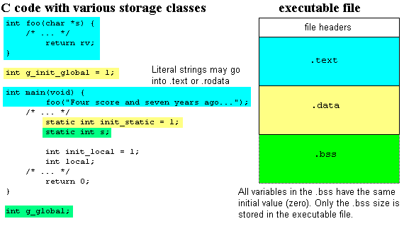
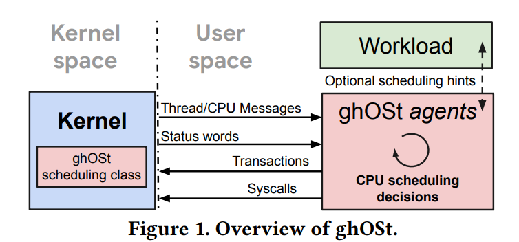

Welcome!
🚧 进程、线程与协程
任务管理：进程、线程与协程
- 进程：每个进程有独立的地址空间，因此有页表切换开销；KPTI(kernel pagetable isolation)下，内核是一个独立的进程，还存在多个用户进程。在异步操作系统中，操作系统内核被视为一个独立的进程，有自己的独立的页表；系统调用过程会变成一种特殊和优化的进程切换。
- 类似于传统的操作系统中进程切换代码是在两个进程中共享的，把内核视为独立进程后，系统调用也成了进程切换。好像每个用户进程中还需要有一段内核态代码，以完成切换过程。
- 线程：每个线程有独立的用户栈，切换时需要保存和恢复全部寄存器。由于内核与用户线程不在一个地址空间中，每个用户线程只有用户栈，不存在对应的内核栈；每个内核线程只有内核栈，不存在对应的用户栈。
- 协程：可以理解为状态机转移函数，执行时共用同一个栈。每个线程内可以有多个协程。编译器将 async 函数变换成状态机时，函数中需要跨越 await 的变量将存放在 Future 对象中（一般在堆上），其它变量只需放在栈上或寄存器中。
系统中,进程,线程,协程的状态.(在启用kpti下)
1.一个内核进程
2.多个常驻内核态的内核协程
3.多个用户进程,每个用户进程下包含多个用户线程,每个用户线程下由多个用户协程,这些用户进程会在运行时不断横跳入内核进程中.
参考 :异步系统调用设计方案
🚧 内核可加载模块系列
GCC (GNU Compiler Collection)
gcc [options] [filenames]
常用选项 -E 制作预处理 -c 只编译不链接,生成目标文件".o" -S 生成汇编代码 -o 把输出生成到由file指定文件名的文件中 -g 在输出的文件中加入支持调试的信息 -v 显示输出详细的命令执行过程信息
gcc的主要执行步骤
1.编译(cc,以c语言为例):
编译器完成 “预处理” 和 “编译”,“预处理” 指处理源文件中以 “#” 开头的预处理指令,譬如 #include、#define 等；
“编译” 则针对预处理的结果进行一系列的词法分析、语法分析、语义分析,优化后生成汇编指令,存放在 .o 为后缀的目标文件中。
2.汇编（as）:
汇编器将汇编语言代码转换为机器（CPU）可以执行的指令。
3.链接（ld）:
链接器将汇编器生成的目标文件和一些标准库（譬如 libc）文件组合,形成最终可执行的应用程序。
gcc -E foo.c -o foo.i(compiler/cc)
gcc -S foo.i -o foo.s(compiler/cc)
gcc -c foo.s -o foo.o(assembler/as)
ld foo.o -o a.out(linker/ld)
GCC 涉及的文件类型 • .c：C 源文件 • .cc/.cxx/.cpp：C++ 源文件 • .i：经过预处理的 C 源文件 • .s/.S：汇编语言源文件 • .h：头（header）文件 • .o：目标（object）文件 • .a/.so：编译后的静态库（archive）文件和共享库 （shared object）文件 • a.out：可执行文件
ELF 介绍
ELF（Executable Linkable Format）是一种 Unix-like 系统上的二进制文件格式标准。
ELF文件类型
1.可重定位文件（Relocatable File） 内容包含了代码和数据,可以被链接成可执行文件或共享目标文件。 如Linux 上的.o文件
2.可执行文件（Executable File） 可以直接执行的程序 如Linux上的a.out
3.共享目标文件（Shared Object File） 内容包含了代码和数据,可以作为链接器的输入,在链接阶段和其他的 Relocatable File或者 Shared Object File一起链接成新的 Object File；或者在运行阶段,作为动态链接器的输入,和Executable File 结合,作为进程的一部分来运行 如Linux上的.so
4.核心转储文件（Core Dump File）进程意外终止时，系统可以将该进程的部分内容和终止时的其他状态信息保存到该文件中以供调试分析。 Linux上的core 文件

链接器
链接器操作的对象
目标文件将其中编译后的机器指令代码,数据,符号表,调式信息等以节(section)存储
代码段(.text) : 程序源代码编译后的机器指令存放位置 数据段(.data) : 初始化不为0的全局和静态数据存放位置 bss段(.bss) : 未初始化或初始化为0的全局和静态数据存放位置

glibc-Run time dynamic linker分析
应用程序加载过程
运行时动态链接
应用程序在它运行时要求动态链接器(dynamic linker)加载和链接某个库, 而不是在编译时将库链接到应用程序中称为运行时动态链接(runtime dynamic linking).
linux中为动态链接器提供的接口主要有dlopen, dlsym
#include <dlfcn.h>
void *dlopen(const char *filename, int flag);
filename是要加载和链接的共享库
flag参数有两种
1.RTLD_NOW, 告诉链接器立即解析对外部符号的引用
2.RTLD_LAZY,告诉链接器推迟到直到执行共享库中的代码时候再进行符号解析
#include <dlfcn.h>
void *dlsym(void *handle, char *symbol);
dlsym函数的输入是一个指向前面已经打开了的共享库handle和一个symbol的名字,如果该符号存在,就返回符号的地址.
下面是一个利用上面接口动态链接一个共享库,并调用其中函数的例子
#include <stdio.h>
#include <stdlib.h>
#include <dlfcn.h>
int x[2] = {1, 2};
int y[2] = {3, 4};
int z[2];
int main()
{
void *handle;
void (*addvec)(int *, int *, int *, int);
char *error;
/* 加载共享库libvector.so */
handle = dlopen("./libvector.so", RTLD_LAZY);
if (!handle) {
fprintf(stderr, "%s\n", dlerror());
exit(1);
}
/* 得到addvec的一个函数指针 */
addvec = dlsym(handle, "addvec");
if ((error = dlerror()) != NULL) {
fprintf(stderr, "%s\n", error);
exit(1);
}
/* 调用addvec */
addvec(x, y, z, 2);
printf("z = [%d %d]\n", z[0], z[1]);
/* unload共享库 */
if (dlclose(handle) < 0) {
fprintf(stderr, "%s\n", dlerror());
exit(1);
}
return 0;
}
🚧 upcall
内核参与调度的方式分两种情况:
1.内核和用户共享协程队列,这是tornado-os的做法.这时候协程执行器,可以直接放在内核中.只需用线程包装协程即可.
2.内核仅有部分协程信息.(内核中无用户协程队列)--->如只有每个进程下最高优先级协程的优先级.这时内核调度协程的方式只能是调度协程所在的线程或者进程--->如在协程执行器中获取下一个任务前,检查内核提供的调度信息. 总体来说. 这相当于一次upcall.即内核向用户提供了一个hint.用户拿到之后就会对此做出反应.(handle_upcall) 例:sosp21-ghost中的模型 
内核参与调度协程的终极过程(未考虑结合用户态中断) 终极目标:有紧急事件时,协程能主动切换.
可能的过程--->当一个紧急事件出现时,如鼠标,键盘中断,内核中的中断处理函数,进入用户空间,再使它执行完当前协程后便主动让出,然后执行紧急协程.
注: 1.应用场景是高性能服务器,多为io密集型程序,执行当前协程不会花费很多时间. 2.好处是不需要保存状态.(因为协程是主动让出的).
难点:被打断的协程没有执行完，直接进入了中断处理函数，此时它的执行状态还在栈上，如果不从中断处理函数返回，那它就没法执行了.
可能的处理方法(脑洞系列): 协程的执行器中有一个upcall_handler(类似内核中的syscall_handler).内核中的中断处理函数,会向用户发一个upcall.然后立即返回被打断的协程. 被打断的协程执行完当前协程之后便会检查是否有upcall. 如果有便做相应的处理.....这个处理具体长什么样还没想清楚.以及这些处理是否能在用户态运行. 此处应@尤予阳.用户态中断相关内容(应该是没有限制的. 因为用户态中断支持外部中断.)
🚧 Futures in Rust
rust异步运行时详解
lambda calculus --> closure --> generator --> future
从lambda calculus到闭包(closure)
lambda演算是Alonzo Church在1935年设计的计算模型，与Turing是同时代的。他们提出了非常不同的计算模型。
Turing证明了两者在计算能力上是等效的,它们都可以有效的模仿另一个,是等效的计算模型.
lambda演算非常特别,因为它由仅由函数和这些函数的参数组成的表达式组成
lambda演算
λx. y 定义参数 x 并返回值 y 的函数
(λx. x) 这是一个恒等函数. 其中λx表示参数, x表示函数的返回值
((λx. x) 2) = 2
有两个参数x ,y的情况
((λx. λy. x+y) 2 3) = 5
((λx. (x x)) (λx. (x x))) = ((λx. (x x)) (λx. (x x))) = ((λx. (x x)) (λx. (x x))) loop
可以传入函数作为参数. 这个例子中返回的将永远是它自己.
匿名函数
匿名函数又称lambda函数, lambda抽象, lambda表达式,建立在lambda演算基础上.
python中lambda函数例子:
>>> foo = lambda x: x * x
>>> foo(10)
100
rust中的lambda函数
#![allow(unused)] fn main() { let adder = |a, b| a + b; }
闭包(Closure)
闭包(Closure)，函数闭包(function closures)又称词法闭包(Lexical Closure)
下面提供多种解释来帮助理解闭包:
在rust book中闭包定义: 可以捕获环境的匿名函数
闭包也可称为引用了自由变量的函数. 这个被引用的自由变量将和这个函数一同存在，即使已经离开了创造它的环境也不例外.
闭包是由函数和与其相关的引用环境组合而成的实体
闭包就是一个捕获了当前上下文变量的结构体(外加一段代码 lambda function)
直接理解rust中的闭包有点困难,我们先从python的例子来看
python中的闭包
例一:
一个函数内部定义另一个函数。这个函数就称为嵌套函数
在display内部, 可以通过它的局部作用域访问greeting
Python 将该greeting变量称为自由变量。
当您查看display函数时，实际上是在查看：display函数本身。以及值为'Hello'的自由变量greeting。
def say():
greeting = 'Hello'
def display():
print(greeting)
display()
例二:
say()函数返回display()函数,而不是执行它
当返回display()函数时,它也返回了闭包
def say():
greeting = 'hello'
def display():
print(greeting)
return display
fn = say()
fn()

输出:
hello
既然变量greeting是say的局部变量,出了函数体应该是不能访问greeting的, 但依旧可以看到fn()输出了hello
>>print(fn.__closure__)
(<cell at 0x0000017184915C40: str object at 0x0000017186A829B0>,)
在这个例子中，单元的内存地址是0x0000017184915C40。它引用了一个字符串对象0x0000017186A829B0
例三:
如果在say函数 和中显示字符串对象的内存地址closure，您应该会看到它们引用了内存中的同一个对象： 这时多个作用域共享同一个变量，所以外部函数和内部函数作用域中的变量greeting是相同的
def say():
greeting = 'Hello'
print(hex(id(greeting)))
def display():
print(hex(id(greeting)))
print(greeting)
return display
fn = say()
fn()
输出:
0x17186a829b0
0x17186a829b0
参考:https://www.pythontutorial.net/advanced-python/python-closures/
rust中的闭包
rust中闭包稍微复杂一些, 因为涉及到获取参数的方式, 在rust中函数获取参数的方式有三种:获取所有权，可变借用和不可变借用
Summary
闭包是函数指针(fn)和环境的组合
闭包不捕获任何环境中变量是一个函数指针。
闭包的方法移出了所捕获的变量的所有权，则会实现FnOnce(self)
闭包的方法没有移出所捕获的变量的所有权，并且对变量进行了修改，即通过可变借用使用所捕获的变量，则会实现FnMut(&mut self)
闭包的方法没有移出所捕获的变量的所有权，并且没有对变量进行修改，即通过不可变借用使用所捕获的变量，则会实现Fn(&self)
如果你希望强制闭包获取其使用的环境值的所有权，可以在参数列表前使用 move 关键字。这个技巧在将闭包传递给新线程以便将数据移动到新线程中时最为实用。

例
#![allow(unused)] #![feature(unboxed_closures, fn_traits)] fn main() { //定义闭包结构体 struct Say { //捕获的环境变量 s: String, } //实现FnOnce方法 impl FnOnce<()> for Say { type Output = (); extern "rust-call" fn call_once(self, args: ()) -> () { println!("{}", self.s); } } //实现FnMut方法 impl FnMut<()> for Say { extern "rust-call" fn call_mut(&mut self, args: ()) -> () { self.s.push_str(" world!"); println!("{}", self.s); } } //实现Fn方法 impl Fn<()> for Say { extern "rust-call" fn call(&self, args: ()) -> () { println!("{}", self.s); } } }
fn main() { let mut greeting = "hello".to_string(); //闭包say捕获环境变量greeting let mut say = Say { s: greeting}; //不修改环境变量 不捕获所有权 say.call(()); //修改环境变量, 不捕获所有权 say.call_mut(()); //移除所有权 say.call_once(()); //之后再调用call call_mut call_once就会报错 }
在了解了rust闭包内部实现之后,再看一些例子
#![allow(unused)] fn main() { //实现了call. 不修改环境变量,不捕获所有权,可多次调用say,但不能修改greeting let greeting = "hello"; let say = || { println!("{}", greeting); }; say(); //实现了call_mut,修改环境变量,不捕获所有权,可多次调用say,可修改greeting let mut greeting = "hello".to_string(); let mut say = || { greeting.push_str(" world"); println!("{}", greeting); }; say(); //实现了call_once,修改环境变量(也可以不修改),捕获所有权,只能调用一次say let mut greeting = "hello".to_string(); let mut say = move || { greeting.push_str(" world"); println!("{}", greeting); }; say(); }
图片来源于Rust中的闭包与关键字move
参考
Understanding Closures in Rust.
闭包到生成器
生成器
一个简单的生成器
下面gen是一个生成器. 可以看处它是使用闭包的语法声明的. 与闭包不同的是. 它多了一个yield关键字, 它可以通过resume()方法多次恢复.
每次resume()调用时,闭包内的代码都会运行, 直到遇到yield
resume返回 yield的值
#![feature(generators, generator_trait)] use std::ops::Generator; use std::pin::Pin; fn main() { // 用闭包创建一个生成器 let mut gen = || { yield 1; yield 2; yield 3; yield 4; return 5; }; //不断调用resume执行 for _ in 0..5 { let c = Pin::new(&mut gen).resume(()); println!("{:?}", c); } }
前4个调用resume()将返回GeneratorState::Yielded(x)，然后返回GeneratorState::Complete(x).
输出
Yielded(1)
Yielded(2)
Yielded(3)
Yielded(4)
Complete(5)
resume()真正返回的是GeneratorState ,定义如下
#![allow(unused)] fn main() { enum GeneratorState<Y, R> { Yielded(Y), Complete(R), } }
接下来看看生成器的背后具体做了什么,以及它和我们之前将的闭包的关系
这是上面例子的等效代码
use std::pin::Pin; #[derive(Debug)] pub enum GeneratorState<Y, R> { Yielded(Y), Complete(R), } pub trait Generator<R = ()> { type Yield; type Return; fn resume(self: Pin<&mut Self>) -> GeneratorState<Self::Yield, Self::Return>; } //和上一章中定义的闭包结构体类似,包含捕获的环境 struct MyGen { i: i32, } //为MyGen实现Generator trait impl Generator for MyGen { type Yield = i32; type Return = i32; fn resume(mut self : Pin<&mut Self>) -> GeneratorState<Self::Yield, Self::Return> { self.i += 1; if self.i == 5 { GeneratorState::Complete(self.i) } else { GeneratorState::Yielded(self.i) } } } fn main() { let mut gen = MyGen { i: 0 }; for _ in 0..5 { let c = Pin::new(&mut gen).resume(); println!("{:?}", c); } }
再看闭包内部的实现
#![allow(unused)] fn main() { pub trait FnOnce<Args> { type Output; extern "rust-call" fn call_once(self, args: Args) -> Self::Output; } impl FnOnce<()> for Say { type Output = (); extern "rust-call" fn call_once(self, args: ()) -> () { foo(); } } }
可见每次生成器执行resume,相当于闭包执行了一次call_once(call, call_mut)
与闭包不同的是,每次resume,生成器都将执行到结果为GeneratorState::Yielded()处, 编译器将生成器编译成状态机。每处yield出对应一个不同的状态.
参考
Futures Explained in 200 Lines of Rust
Experimentally add coroutines to Rust #43122
generator--->future
Future的定义
#![allow(unused)] fn main() { pub trait Future { type Output; fn poll(self: Pin<&mut Self>, cx: &mut Context<'_>) -> Poll<Self::Output>; } }
可见与生成器的区别是:
生成器使用resume来执行进入下一个状态, Future使用poll.
生成器返回Yielded或者Complete, Future返回Pending或者Ready.
Future中有Context, waker
🚧 从零实现riscv编译器系列
编译器组成
源程序 --> 前端-->中间表示-->后端 -->目标程序
前端: 预处理, 词法分析, 语法分析 (目标机器无关)
中间表示: 抽象语法树, 中间代码形式, 中间表示优化
后端: 目标机器描述, 指令选择, 指令调度, 寄存器分配, 汇编代码生成 (目标机器有关)
前端语言(c, c++, go, rust)
后端目标机器(riscv, x86, arm)
汇编器, 链接器, 调试器, 运行库, 目标文件分析工具等一系列程序,组成GUN工具链
gcc流程
hello.c -> hello.i ->词法/语法分析 -> AST生成(hello.c.t(tree))
-> IR生成 -> IR优化(hello.c.*i(pa)) -> RTL生成(hello.c.*i(tl))
-> RTL优化 ->汇编代码生成(hello.s)
语法分析的任务是判断词法分析生成的token是否是一个符合编程语言语法的句子gcc中c_parser定义了c语言的语法结构,通过c_parse*函数进行语法分析.
语法分析过程
语法分析首先会调用c_parse_init进行初始化, 然后调用c_parse_file对词符进行判断并分析编译制导类型,接着调用c_parser_translation_unit来进行语法推导, 推导过程中调用c_parser_external_declaration来判断token类型是否正确, 并默认使用c_parser_declaration_or_fndef来对token声明进行正确性检查.
初始化->载入token->语法推导->判断token类型->声明检查
源程序 -> 词法分析(c_token) ->(c_lex_one_token) tokens ->(c_parser_peek_token)->语法分析(c_parse) -> 语法分析树生成
c_parser_declaration_or_fndef对token流处理完成以后,c-parser.c对处理后的c_parser进行分类并构建语法分析树
🚧 2021-os-camp
7.6
开始tutorial!
使用链接脚本指定程序内存布局
一般来说，一个程序按照功能不同会分为下面这些段：
|
.text 段，即代码段，存放代码 出错时候的eip往往在这个段.指向某一条语句.以此来定位问题；
.rodata 段，即只读数据段，顾名思义里面存放只读数据，通常是程序中的常量； .data 段，存放被初始化的可读写数据，通常保存程序中的全局变量； .bss 段，存放被初始化为 00 的可读写数据，与 .data 段的不同之处在于我们知道它要被初始化为 00 ，因此在可执行文件中只需记录这个段的大小以及所在位置即可，而不用记录里面的数据。 stack ，即栈，用来存储程序运行过程中的局部变量，以及负责函数调用时的各种机制。它从高地址向低地址增长； heap ，即堆，用来支持程序运行过程中内存的动态分配，比如说你要读进来一个字符串，在你写程序的时候你也不知道它的长度究竟为多少，于是你只能在运行过程中，知道了字符串的长度之后，再在堆中给这个字符串分配内存。 |
链接脚本示例:
SECTIONS
{
. = 0x10000;
.text : { *(.text) }
. = 0x8000000;
.data : { *(.data) }
.bss : { *(.bss) }
}
. 表示起始地址 如果没有这个地址，默认该符号的值为0
.text : { *(.text) } : 将所有(*符号代表任意输入文件)文件的.text section合并成一个.text section,该section的地址由定位器符号的值指定, 即0x10000.
. = 0x8000000 ：把定位器符号置为0x8000000
.data : { *(.data) } : 同上
.bss : { *(.bss) } : 同上
其他命令 ENTRY(SYMBOL) :将符号SYMBOL的值设置成入口地址。
INCLUDE filename : 包含其他名为filename的链接脚本
INPUT(files): 将括号内的文件做为链接过程的输入文件
GROUP(files) : 指定需要重复搜索符号定义的多个输入文件
OUTPUT(FILENAME) : 定义输出文件的名字
SEARCH_DIR(PATH) ：定义搜索路径，
OUTPUT_ARCH() : 设置输出文件的体系结构
python生成链接脚本,以及用户程序build
多个用户程序build
import os
base_address = 0x80400000
step = 0x20000
linker = 'src/linker.ld'
app_id = 0
apps = os.listdir('src/bin')
apps.sort()
for app in apps:
app = app[:app.find('.')]
lines = []
lines_before = []
with open(linker, 'r') as f:
for line in f.readlines():
lines_before.append(line)
line = line.replace(hex(base_address), hex(base_address+step*app_id))
lines.append(line)
with open(linker, 'w+') as f:
f.writelines(lines)
os.system('cargo build --bin %s --release' % app)
print('[build.py] application %s start with address %s' %(app, hex(base_address+step*app_id)))
with open(linker, 'w+') as f:
f.writelines(lines_before)
app_id = app_id + 1
生成bin文件...objcopy
import os
base_address = 0x80400000
step = 0x20000
linker = 'src/linker.ld'
app_id = 0
apps = os.listdir('src/bin')
apps.sort()
for app in apps:
app = app.strip('.rs')
os.system('rust-objcopy --binary-architecture=riscv64 target/riscv64gc-unknown-none-elf/release/%s --strip-all -O binary target/riscv64gc-unknown-none-elf/release/%s.bin'%(app,app))
生成链接脚本link_app.S 目录下所有bin文件写进链接脚本
import os
f = open('link_app.S', 'w')
f.writelines(" .align 3\n")
f.writelines(" .section .data\n")
f.writelines(" .global _num_app\n")
f.writelines("_num_app:\n")
apps = os.listdir('target/riscv64gc-unknown-none-elf/release')
num = 0
bin_list = []
for app in apps:
if 'bin' in app:
num += 1
bin_list.append(app)
f.writelines(" .quad %s\n" %len(bin_list))
count = 0
for app in bin_list:
f.writelines(" .quad app_%s_start\n" %count)
count += 1
f.writelines("\n")
f.writelines(" .section .data\n")
f.writelines(" .global app_0_start\n")
f.writelines(" .global app_0_end\n")
for i in range(len(bin_list)):
f.writelines("app_%s_start:\n" %i)
f.writelines(" .incbin \"../test/target/riscv64gc-unknown-none-elf/release/%s\"\n" %bin_list[i])
f.writelines("app_%s_end:\n\n" %i)
f.close()
彩色输出
用print宏包装 info debug error. 加点参数就能显示出不同颜色
#![allow(unused)] fn main() { #[macro_export] macro_rules! print { ($($arg:tt)*) => ({ $crate::io::_print(format_args!($($arg)*)); }); } #[macro_export] macro_rules! println { () => ($crate::print!("\n")); ($($arg:tt)*) => ($crate::print!("{}\n", format_args!($($arg)*))); } #[macro_export] macro_rules! info { () => ($crate::print!("\n")); ($($arg:tt)*) => ($crate::print!("\x1b[31m{}\x1b[0m\n", format_args!($($arg)*))); } #[macro_export] macro_rules! debug { () => ($crate::print!("\n")); ($($arg:tt)*) => ($crate::print!("\x1b[32m{}\x1b[0m\n", format_args!($($arg)*))); } #[macro_export] macro_rules! error { () => ($crate::print!("\n")); ($($arg:tt)*) => ($crate::print!("\x1b[34m{}\x1b[0m\n", format_args!($($arg)*))); } }
操作系统多核支持
在intel手册8.4 MULTIPLE-PROCESSOR (MP) INITIALIZATION 可查到多核启动相关信息.
8.4.1 BSP and AP Processors The MP initialization protocol defines two classes of processors: the bootstrap processor (BSP) and the application processors (APs). Following a power-up or RESET of an MP system, system hardware dynamically selects one of the processors on the system bus as the BSP. The remaining processors are designated as APs. As part of the BSP selection mechanism, the BSP flag is set in the IA32_APIC_BASE MSR (see Figure 10-5) of the BSP, indicating that it is the BSP. This flag is cleared for all other processors. The BSP executes the BIOS’s boot-strap code to configure the APIC environment, sets up system-wide data structures, and starts and initializes the APs. When the BSP and APs are initialized, the BSP then begins executing the operating-system initialization code.Following a power-up or reset, the APs complete a minimal self-configuration, then wait for a startup signal (a SIPI message) from the BSP processor. Upon receiving a SIPI message, an AP executes the BIOS AP configuration code, which ends with the AP being placed in halt state. For Intel 64 and IA-32 processors supporting Intel Hyper-Threading Technology, the MP initialization protocol treats each of the logical processors on the system bus or coherent link domain as a separate processor (with a unique APIC ID). During boot-up, one of the logical processors is selected as the BSP and the remainder of the logical processors are designated as APs.
在启动时候.会选出一个核作为BSP. 同时设置其他核(APs)的flag信息.然后由BSP来执行初始化其他核(APs). 当BSP和APs都初始化完成后,由BSP来执行系统初始化代码
学习多核启动支持
参考已有的实现
主要看链接脚本中指定的入口汇编代码,以及接下来跳转到的代码
1.rcore
.section .text.entry
.globl _start
_start:
# a0 == hartid
# pc == 0x80200000
# sp == 0x800xxxxx
# 1. set sp
# sp = bootstack + (hartid + 1) * 0x10000
add t0, a0, 1
slli t0, t0, 14
lui sp, %hi(bootstack)
add sp, sp, t0
....(略)
# 3. jump to rust_main (absolute address)
lui t0, %hi(rust_main)
addi t0, t0, %lo(rust_main)
jr t0
.section .bss.stack
.align 12 # page align
.global bootstack
bootstack:
.space 4096 * 4 * 8
.global bootstacktop
bootstacktop:
.section .data
.align 12 # page align
....(略)
加载常量到某寄存器常用的汇编代码
lui t0, %hi(constant)
addi t0, t0, %lo(constant)
加载绝对地址到某寄存器
lui t0, %hi(address)
addi t0, t0, %lo(address)
有了这个基础这段代码就好理解了 为当前核心设置一个栈,地址为:sp = bootstack + (hartid + 1) * 0x10000 再跳转到rust_main....
next:
#![allow(unused)] fn main() { #[no_mangle] pub extern "C" fn rust_main(hartid: usize, device_tree_paddr: usize) -> ! { let device_tree_vaddr = phys_to_virt(device_tree_paddr); unsafe { cpu::set_cpu_id(hartid); } if hartid != BOOT_HART_ID { while !AP_CAN_INIT.load(Ordering::Relaxed) {} others_main(hartid); } unsafe { memory::clear_bss(); } println!( "Hello RISCV! in hart {}, device tree @ {:#x}", hartid, device_tree_vaddr ); crate::logging::init(); unsafe { trapframe::init(); } memory::init(device_tree_vaddr); timer::init(); // FIXME: init driver on u540 #[cfg(not(any(feature = "board_u540")))] board::init(device_tree_vaddr); unsafe { board::init_external_interrupt(); } crate::process::init(); AP_CAN_INIT.store(true, Ordering::Relaxed); crate::kmain(); } fn others_main(hartid: usize) -> ! { unsafe { trapframe::init(); } memory::init_other(); timer::init(); info!("Hello RISCV! in hart {}", hartid); crate::kmain(); } }
rust_main的多核处理
1.设置thread_pointer为hartid
2.首先让hartid = BOOT_HART_ID执行完rust_main,同时如果其他hart进入到此函数则循环等待.直到BST(boot_hart)执行启动代码,并设置原子操作操作AP_CAN_INIT.store(true, Ordering::Relaxed)后,再执行其他hart的初始化操作.
这里用到了rust中的atomic基本用法如下:
#![allow(unused)] fn main() { use std::sync::atomic::{AtomicBool, Ordering}; let some_bool = AtomicBool::new(true); some_bool.store(false, Ordering::Relaxed); assert_eq!(some_bool.load(Ordering::Relaxed), false); }
|
申请一个原子型bool变量初始化为true. AtomicBool::new(true)
load(Ordering::Relaxed)来获得变量值 store(false, Ordering::Relaxed)来改变值 |
多核启动概括
1.让主核(BST)执行完启动代码.同时设置原子操作让其他核等待.然后执行其他核(AP)的启动代码.
2.为每个核设置好栈
实现中断机制
内核栈:固定大小,每个进程,线程都有一个内核栈.内核栈是进程,线程在内核态下所使用的栈.在用户态下cpu的sp指针指向的是用户栈的栈顶.内核态下指定内核栈的栈顶.
中断实现思路
|
1.区分是从用户态还是内核态中断, 保存32个通用寄存器以及一些控制与状态寄存器csr.然后跳转到中断处理函数 此部分用汇编语言写
2.进入中断处理函数,print中断来源(用户态or内核态) 当前中断指令(pc) 中断原因(读取scause寄存器) # 如果从内核态进入中断， sstatus 的 SPP 位被硬件设为 1 # 如果从用户态进入中断， sstatus 的 SPP 位被硬件设为 0 3.恢复上下文. 恢复32个通用寄存器,以及一些csr寄存器. |
按照 TrapContext 结构体的内存布局，它从低地址到高地址分别按顺序放置 x0~x31，最后是 sstatus 和 sepc 。因此通用寄存器 xn 应该被保存在地址区间 [sp+8n,sp+8(n+1)) 。 在这里我们正是这样基于 sp 来保存这些通用寄存器的。 (主要保存trapframe中内容)保存32个通用寄存器以及一些控制与状态寄存器csr 此部分与trapframe结构体一致. 恢复时只要把结构体指针指向sp就能恢复trapframe
csrrw rd, csr, rs 可以将 CSR 当前的值读到通用寄存器 rd 中，然后将 通用寄存器 rs 的值写入该 CSR 。因此这里起到的是交换 sscratch 和 sp 的效果。在这一行之前 sp 指向用户栈， sscratch 指向内核栈，现在 sp 指向内核栈， sscratch 指向用户栈。
从用户态中断时,sp指向内核栈.然后在sp[...]区间中保存trapcontext内容
疑问:(中断处理程序用的也是内核栈,难道执行流不会改变内核栈中的内容吗? 那保存了还有什么意义. 该执行流仅会改动trapcontext中的内容吗?)
分析:sp永远指向执行流中的栈.所以中断处理程序运行时候并不会干扰到原本保持的内容
more:内核栈可以理解为是一个中断发生时临时存放通用寄存器以及指令与状态寄存器信息的栈. 实际内核在执行中断处理函数时并不会用到该栈(指的是不修改.还是可以从中读取一些信息),内核执行中断处理函数时所使用的栈是sp.(在任何执行流中使用的栈都应该是sp)
addi sp, sp, -34*8为什么这条指令可以表示分配了栈帧. sp指向的是栈顶. 栈向低地址增长,现在减少sp的值意味着栈顶的提高.相当于分配了空间
时钟中断
相关寄存器 mtime mtimecmp mie sie sip
SI(Software Interrupt)，软件中断 TI(Timer Interrupt)，时钟中断 EI(External Interrupt)，外部中断
mtimecmp = mtime + X A timer interrupt (if enabled) is generated whenever mtime is greater than or equal to the valuein the mtimecmp register. Therefore, to generate a timer interrupt after X cycles, one can updatemtimecmp register as follows: mtimecmp = mtime + X.
// 根据中断原因分类讨论
// 只能当每一次时钟中断触发时
// 设置下一次时钟中断的触发时间
// 设置为当前时间加上 TIMEBASE
// 这次调用用来预处理
根绝scause 区分中断类别. 该有不同的处理了 以及设置多少cycle触发一次时钟中断
中断具体实现
整理下中断操作相关的csr寄存器
sepc:发生异常的指令的pc被存入sepc. 我们需要读取他来获得bug信息.
stvec:riscv处理器trap后跳入的PC地址由一个叫做机器模式异常入口基地址寄存器mtvec的csr寄存器指定. mtvec是一个可读可写的寄存器, 软件可以编程设定它的值.在S模式下用到的寄存器即为stvec.我们需要用写stvec来跳转到中断处理代码.trap.asm中的__alltraps处
scaues:它会记录中断发生的原因, 需要用读取该寄存器来根据不同类型中断执行不同处理代码
sstatus:需要设置它的sie位来使能中断
如何读写csr寄存器
读写satp寄存器为例:
#![allow(unused)] fn main() { pub fn read() -> usize { let ret: usize; unsafe {llvm_asm!("csrr $0, satp":"=r"(ret):::"volatile");} ret } }
#![allow(unused)] fn main() { pub unsafe fn write(x: usize) { llvm_asm!("csrw satp, $0"::"r"(x)::"volatile"); } }
初始化中断
在处理器的程序执行过程中,一旦发生异常,则终止当前的程序流,处理器被强行跳转到一个新的PC地址。
在riscv中S态该地址由stvec指定stvec低2位位mode域,高30位是base域.
当MODE=0，设置为 Direct 模式时，则所有的异常响应时处理器均跳转到base值指示的pc地址。
当MODE=1时，设置为 Vectored 模式时，遇到中断我们会进行跳转如下：PC->BASE + 4 x cause。而这样，我们只需将各中断处理程序放在正确的位置，并设置好 stvec ，遇到中断的时候硬件根据中断原因就会自动跳转到对应的中断处理程序了
在此我们选择Direct模式.跳转到统一地址进行处理
#![allow(unused)] fn main() { pub fn init() { unsafe { extern "C" { fn __alltraps(); } //设置trap跳转到统一地址 __alltraps处 println!("trap init--------------"); stvec::write(__alltraps as usize); sstatus::set_sie(); } println!("++++ setup interrupt! ++++"); } }
stvec
#![allow(unused)] fn main() { #[inline] pub unsafe fn _write(x: usize) { llvm_asm!("csrw stvec, $0"::"r"(x)::"volatile"); } //0为设置成Direct模式 #[inline] pub unsafe fn write(addr: usize) { _write(addr + 0 as usize); } }
sstatus
#![allow(unused)] fn main() { const SIE: usize = 1 << 1; // supervisor interrupt enable #[inline] pub fn write(x: usize) { unsafe {llvm_asm!("csrw sstatus, $0"::"r"(x)::"volatile");} } #[inline] pub fn read() -> usize { let ret: usize; unsafe {llvm_asm!("csrr $0, sstatus":"=r"(ret):::"volatile");} ret } #[inline] pub fn set_sie() { write(read() | SIE); } }
__alltrap
__alltraps:
csrrw sp, sscratch, sp 交换用户栈和内核栈
addi sp, sp, -34*8 在内核栈上分配一个trapcontext大小的栈帧
#![allow(unused)] fn main() { #[repr(C)] pub struct TrapContext { // 32个通用寄存器 pub x: [usize; 32], // 几个相关csr寄存器 pub sstatus: usize, pub sepc: usize, pub stval: usize, pub scause: usize, //共需(32+4)*8的栈空间 } }
trap.asm
.section .text
.globl __alltraps
__alltraps:
SAVE_ALL
mv a0, sp
jal trap_handler
.globl __trapret
__trapret:
RESTORE_ALL
sret
.equ XLENB, 8
.macro LOAD a1, a2
ld \a1, \a2*XLENB(sp)
.endm
.macro STORE a1, a2
sd \a1, \a2*XLENB(sp)
.endm
save_all和restore_all
.macro SAVE_ALL
csrrw sp, sscratch, sp
addi sp, sp, -36*XLENB
STORE x1, 1
STORE x3, 3
...
STORE x30, 30
STORE x31, 31
csrrw s0, sscratch, x0
csrr s1, sstatus
csrr s2, sepc
csrr s3, stval
csrr s4, scause
STORE s0, 2
STORE s1, 32
STORE s2, 33
STORE s3, 34
STORE s4, 35
.endm
.macro RESTORE_ALL
LOAD s1, 32
LOAD s2, 33
andi s0, s1, 1 << 8
csrw sstatus, s1
csrw sepc, s2
LOAD x1, 1
LOAD x3, 3
...
LOAD x30, 30
LOAD x31, 31
LOAD x2, 2
.endm
分别用ld和sd来保存通用寄存器.64位数据需要8字节空间存储.用寄存器编号*8(sp)来存放到trapcontext中相应位置去 区分是从用户态中断还是从内核态中断.只需判断sp是否为0.sp!=0则是从用户态进入中断.sp=0则是从内核态进入中断.无需切换栈
实现中断处理函数trap_handler
#![allow(unused)] fn main() { #[no_mangle] pub unsafe fn trap_handler(tf: &mut TrapContext) { let cause = scause::read().get_bits(0..15) as u64; let epc = sepc::read(); // println!("trap: cause: {:#}, epc:{:#x}", cause, epc); match cause { 3 => breakpoint(&mut tf.sepc), 5 => super_timer(), 12 => page_fault(tf), 13 => page_fault(tf), 15 => page_fault(tf), _ => println!("undefined trap!") } } }
1.打印出中断类型,以及触发中断指定的pc值.以便以后调试
2.根据cause不同分别进行不同的处理
#![allow(unused)] fn main() { 如果是断点则打印断点pc. 然后pc+2.执行下一条指令 (riscv64指定长度为4字节.原来应该是sepc+4.但是编译器的行为会压缩.所以修正为sepc+2) fn breakpoint(sepc: &mut usize) { println!("a breakpoint epc:0x{:x}", sepc); *sepc += 2; } 每次触发时钟中断TICKS+1.触发100次打印一次. fn super_timer() { clock_set_next_event(); unsafe { TICKS += 1; if TICKS == 100 { TICKS = 0; println!("* 100 ticks *"); } } } //page_fault fn page_fault(tf: &mut TrapContext) { let cause = scause::read().get_bits(0..15) as u64; let epc = sepc::read(); println!("{:?} va = {:#x} instruction = {:#x}", cause, tf.stval, tf.sepc); panic!("page fault!"); } }
至此trap可以可以正常工作
运行应用程序
将应用程序链接到内核
link_app.S
.align 3
.section .data
.global _num_app
_num_app:
.quad 3
.quad app_0_start
.quad app_1_start
.quad app_2_start
.quad app_2_end
.section .data
.global app_0_start
.global app_0_end
app_0_start:
.incbin "../user/target/riscv64gc-unknown-none-elf/release/00hello_world.bin"
app_0_end:
.section .data
.global app_1_start
.global app_1_end
app_1_start:
.incbin "../user/target/riscv64gc-unknown-none-elf/release/01store_fault.bin"
app_1_end:
.section .data
.global app_2_start
.global app_2_end
app_2_start:
.incbin "../user/target/riscv64gc-unknown-none-elf/release/02power.bin"
app_2_end:
.incbin
|
The incbin directive includes file verbatim at the current location. You can control the search paths used with the -I command-line option (refer to Chapter 3 Command-Line Options). Quotation marks are required around file.
The skip argument skips a number of bytes from the start of the file. The count argument indicates the maximum number of bytes to read. Note that the data is not aligned in any way, so it is the user's responsibility to make sure that proper alignment is provided both before and after the incbin directive. |
.quad
用来定义一个8字节. 地址为各个应用程序起始地址
num_app_ptr[x] 来得到_num_app中定义的应用程序起始地址
然后用copy_from_slice来实现类似memcpy的功能
#![allow(unused)] fn main() { lazy_static! { static ref APP_MANAGER: AppManager = AppManager { inner: RefCell::new({ extern "C" { fn _num_app(); } let num_app_ptr = _num_app as usize as *const usize; let num_app = unsafe { num_app_ptr.read_volatile() }; let mut app_start: [usize; MAX_APP_NUM + 1] = [0; MAX_APP_NUM + 1]; let app_start_raw: &[usize] = unsafe { core::slice::from_raw_parts(num_app_ptr.add(1), num_app + 1) }; app_start[..=num_app].copy_from_slice(app_start_raw); AppManagerInner { num_app, current_app: 0, app_start, } }), }; } }
把应用程序的代码和数据存在了app_start的数组之后.然后利用trap返回在内核栈上压入设置好的栈 riscv函数调用规定第一个参数放在a0中. 利用这点trap.asm 中 __trapret mv sp, a0 可以让我们压入我们设置好的栈 栈设置:
1.ssp设置为user
2.sepc设置为应用程序入口地址
#![allow(unused)] fn main() { impl TrapContext { pub fn set_sp(&mut self, sp: usize) { self.x[2] = sp; } pub fn app_init_context(entry: usize, sp: usize) -> Self { let mut sstatus = sstatus::read(); sstatus.set_spp(SPP::User); let mut cx = Self { x: [0; 32], sstatus, sepc: entry, }; cx.set_sp(sp); cx } } }
由于在 RISC-V 中栈是向下增长的, 栈顶地址 = 起始地址+栈大小
#![allow(unused)] fn main() { impl KernelStack { fn get_sp(&self) -> usize { self.data.as_ptr() as usize + KERNEL_STACK_SIZE } pub fn push_context(&self, cx: TrapContext) -> &'static mut TrapContext { let cx_ptr = (self.get_sp() - core::mem::size_of::<TrapContext>()) as *mut TrapContext; unsafe { *cx_ptr = cx; } unsafe { cx_ptr.as_mut().unwrap() } } } }
处理系统调用
系统调用:通过查riscv手册 Environment call from U-mode 为异常.异常号为8
在traphandler中加入对系统调用处理
通过读取scause的第64位来区分是中断还是异常, 然后视不同情况进行处理
#![allow(unused)] fn main() { #[no_mangle] pub unsafe fn trap_handler(tf: &mut TrapContext) -> &mut TrapContext{ let cause = scause::read().get_bits(0..15) as u64; let epc = sepc::read(); // println!("trap: cause: {:#}, epc:{:#x}", cause, epc); let tmp = scause::read().get_bit(63); //tmp 区分中断还是异常 if tmp == true { match cause { _ => println!("undefined trap!") } tf }else{ match cause { 2 => { println!("[kernel] IllegalInstruction in application, core dumped."); run_next_app(); } 3 => breakpoint(&mut tf.sepc), 5 => super_timer(), // 12 => page_fault(tf), // 13 => page_fault(tf), 7 | 15 => { println!("[kernel] PageFault in application, core dumped."); run_next_app(); } 8 => user_syscall(tf), _ => println!("undefined Exception!") } tf } } }
最终得到预取结果~~
#![allow(unused)] fn main() { ++++ setup interrupt! ++++ [kernel] num_app = 3 [kernel] app_0 [0x80210654, 0x802119e4) [kernel] app_1 [0x802119e4, 0x80212e14) [kernel] app_2 [0x80212e14, 0x802143ac) [kernel] Loading app_0 [kernel] Loading app_0 finished Hello, world! [kernel] IllegalInstruction in application, core dumped. [kernel] Loading app_1 [kernel] Loading app_1 finished Into Test store_fault, we will insert an invalid store operation... Kernel should kill this application! [kernel] PageFault in application, core dumped. [kernel] Loading app_2 [kernel] Loading app_2 finished 3^10000=5079 3^20000=8202 3^30000=8824 3^40000=5750 3^50000=3824 3^60000=8516 3^70000=2510 3^80000=9379 3^90000=2621 3^100000=2749 Test power OK! [kernel] Application exited with code 0 panicked at 'All applications completed!', src\batch.rs:61:13 }
运行应用程序总结
1.编写应用程序
编写用户态syscall. 就如同os调用sbicall类似!
通过linker链接脚本.来指定应用程序入口地址
2.链接应用程序
.quad 来指定一个8字节地址
.incbin 来载入一个文件
3.在内核中载入应用程序
通过from_raw_parts_mut 和 copy_from_slice 来实现类似memcpy功能
4.为应用程序设置好TrapContext
1.ssp设置为user
2.sepc设置为应用程序入口地址
5.利用trapret来把设置好的TrapContext压入到内核栈中
6.中断中加入对系统调用支持
1.Environment call from U-mode
7.选择何时运行应用程序
调度器相关.实验暂时未涉及.只是通过人为触发异常指令来进入中断,然后在中断处理中运行下一个应用程序
第三章
多道程序放置与加载
和上一章不同的是app其实地址被加载到了APP_BASE_ADDRESS + app_id * APP_SIZE_LIMIT位置上
任务切换
在处理trap时.我们需要切换成内核栈.而在用户程序切换时,我们需要切换的另一个程序的栈.
当前任务切换的本质是函数调用,我们需要保存的是riscv函数调用规定中caller-saved的寄存器.s0~s11
保存好当前任务的信息后.如何返回当前任务继续执行?. 在做函数切换前,编译器会帮我们吧ra寄存器的值改为
函数调用返回后第一条指令的地址. 因此需要保存ra
切换到目标任务. riscv函数调用第一第二个参数分别保存在a0/a1.因此ld sp, 0(a1)即可换栈.
然后读取ra s0~s11.
协作式调度
有了任务切换,那么何时进行切换?
现在的做法是应用程序主动暂停sys_yield 以及主动退出sys_exit
任务管理器
保存了各个程序切换时描述自身的栈信息
#![allow(unused)] fn main() { pub struct TaskManager { num_app: usize, inner: RefCell<TaskManagerInner>, } struct TaskManagerInner { tasks: [TaskControlBlock; MAX_APP_NUM], current_task: usize, } unsafe impl Sync for TaskManager {} }
切换任务
__switch第一个参数是自身栈,第二个参数是目标任务的栈
#![allow(unused)] fn main() { fn run_next_task(&self) { if let Some(next) = self.find_next_task() { let mut inner = self.inner.borrow_mut(); let current = inner.current_task; inner.tasks[next].task_status = TaskStatus::Running; inner.current_task = next; let current_task_cx_ptr2 = inner.tasks[current].get_task_cx_ptr2(); let next_task_cx_ptr2 = inner.tasks[next].get_task_cx_ptr2(); core::mem::drop(inner); unsafe { __switch( current_task_cx_ptr2, next_task_cx_ptr2, ); } } else { panic!("All applications completed!"); } } }
find_next_task.找到状态为TaskStatus::Ready的任务
#![allow(unused)] fn main() { fn find_next_task(&self) -> Option<usize> { let inner = self.inner.borrow(); let current = inner.current_task; (current + 1..current + self.num_app + 1) .map(|id| id % self.num_app) .find(|id| { inner.tasks[*id].task_status == TaskStatus::Ready }) } }
分时多任务系统与抢占式调度
比较简单.设置好时钟中断, 并在时钟中断发生时run_next_task(),在trap_handler中加入相应处理即可
#![allow(unused)] fn main() { #[no_mangle] pub unsafe fn trap_handler(tf: &mut TrapContext) -> &mut TrapContext{ ......... match cause { ......... 5 => super_timer(), _ => println!("undefined Exception!") } tf } } fn super_timer() { clock_set_next_event(); suspend_current_and_run_next(); unsafe { TICKS += 1; if TICKS == 100 { TICKS = 0; println!("* 100 ticks *"); } } } }
chapter3练习
stride 调度算法
之前是在发生时钟中断时,选择下一个Ready状态的程序运行,stride调度算法即,程序初始stride为0.为每个程序设置一个pass.每次程序运行stride+pass. 并总是选择stride最小的程序运行.
增加数据结构
task_pass
task_stride
task_priority
task_time
#![allow(unused)] fn main() { struct TaskManagerInner { tasks: [TaskControlBlock; MAX_APP_NUM], pub current_task: usize, pub task_pass:[usize; MAX_APP_NUM], pub task_stride:[usize; MAX_APP_NUM], pub task_priority:[usize; MAX_APP_NUM], pub task_time:[usize; MAX_APP_NUM], } }
寻找下一个执行程序
1.更新当前进程stride
2.寻找下一个stride值最小的进程
#![allow(unused)] fn main() { fn find_next_task(&self) -> Option<usize> { //update let mut inner = self.inner.borrow_mut(); let current = inner.current_task; let priority = inner.task_priority[current]; if inner.tasks[current].task_status == TaskStatus::Ready { inner.task_stride[current] = inner.task_stride[current] + 127 / priority } let num_app = get_num_app(); let mut max_stride = 10000000; let mut next = 0 as usize; for i in 0..num_app{ let stride_i = inner.task_stride[i]; if stride_i <= max_stride && inner.tasks[i].task_status != TaskStatus::Exited{ next = i; max_stride = stride_i; } } let mut exited_count = 0 as usize; for i in 0..num_app{ if inner.tasks[i].task_status == TaskStatus::Exited{ exited_count += 1; } } if exited_count == num_app{ println!("all exited"); None }else{ println!(" next min stride app id{}", next); Some(next) } } }
标记退出进程
#![allow(unused)] fn main() { fn mark_current_suspended(&self) { let mut inner = self.inner.borrow_mut(); let current = inner.current_task; inner.task_time[current] += 1; inner.tasks[current].task_status = if inner.task_time[current] >= 500 { inner.task_stride[current] = 10000000; println!("app id {} exited run out of time", current); TaskStatus::Exited } else { TaskStatus::Ready }; } }
首先是id0运行.id0 exit 切换到id3
id3执行的是主动yeild所以立马进行了切换
....
all exited所以程序执行完毕
程序如期运行
#![allow(unused)] fn main() { OpenSBI v0.7 ____ _____ ____ _____ / __ \ / ____| _ \_ _| | | | |_ __ ___ _ __ | (___ | |_) || | | | | | '_ \ / _ \ '_ \ \___ \| _ < | | | |__| | |_) | __/ | | |____) | |_) || |_ \____/| .__/ \___|_| |_|_____/|____/_____| | | |_| Platform Name : QEMU Virt Machine Platform HART Features : RV64ACDFIMSU Current Hart : 0 Firmware Base : 0x80000000 Firmware Size : 128 KB Runtime SBI Version : 0.2 MIDELEG : 0x0000000000000222 MEDELEG : 0x000000000000b109 PMP0 : 0x0000000080000000-0x000000008001ffff (A) PMP1 : 0x0000000000000000-0xffffffffffffffff (A,R,W,X) stext 80200000 etext 8020a000 srodata 8020a000 erodata 80236000 sdata 8023663c edata 8023be49 sbss 8024be50 ebss 8024c058 Hello, world! base i 0x80400000 base i 0x80420000 base i 0x80440000 base i 0x80460000 load app done ++++ setup timer! ++++ power_3 [10000/200000] power_3 [20000/200000] power_3 [30000/200000] power_3 [40000/200000] power_3 [50000/200000] power_3 [60000/200000] power_3 [70000/200000] power_3 [80000/200000] power_3 [90000/200000] power_3 [100000/200000] power_3 [110000/200000] power_3 [120000/200000] power_3 [130000/200000] power_3 [140000/200000] power_3 [150000/200000] power_3 [160000/200000] power_3 [170000/200000] power_3 [180000/200000] power_3 [190000/200000] power_3 [200000/200000] 3^200000 = 871008973 Test power_3 OK! [kernel] Application exited with code 0 app id 0 exited next min stride app id3 current 0 start switch to 3 next min stride app id2 current 3 start switch to 2 next min stride app id1 current 2 start switch to 1 power_5 [10000/140000] power_5 [20000/140000] power_5 [30000/140000] power_5 [40000/140000] power_5 [50000/140000] power_5 [60000/140000] power_5 [70000/140000] power_5 [80000/140000] power_5 [90000/140000] power_5 [100000/140000] power_5 [110000/140000] power_5 [120000/140000] power_5 [130000/140000] power_5 [140000/140000] 5^140000 = 386471875 Test power_5 OK! [kernel] Application exited with code 0 app id 1 exited next min stride app id3 current 1 start switch to 3 Test sleep OK! [kernel] Application exited with code 0 app id 3 exited next min stride app id2 current 3 start switch to 2 power_7 [10000/160000] power_7 [20000/160000] power_7 [30000/160000] power_7 [40000/160000] power_7 [50000/160000] power_7 [60000/160000] power_7 [70000/160000] power_7 [80000/160000] power_7 [90000/160000] power_7 [100000/160000] power_7 [110000/160000] power_7 [120000/160000] power_7 [130000/160000] power_7 [140000/160000] power_7 [150000/160000] power_7 [160000/160000] 7^160000 = 667897727 Test power_7 OK! [kernel] Application exited with code 0 app id 2 exited all exited panicked at 'All applications completed!', src\task\mod.rs:149:13 93 panicked at 'It should shutdown!', src\sbi.rs:45:5 }
ch3repo
1:这一章由应用程序主动yeild exit 或者超时 来触发中断. 然后由traphandler进行处理并运行下一个程序...本质上没有调度策略..
2:(1)本质上都是RR算法 (2) p1 -> p2 -> p3 -> p1结束 ->p2开始->p4产生->p2结束->p3开始->p5产生->p3结束->p5开始
我的算法下stride相同时选择TID较小的运行,因为是第一个选中的.
3: 参考https://piazza.com/class/i5j09fnsl7k5x0?cid=357
地址空间
物理内存
物理内存页式管理
对于物理内存的页式管理而言，我们所要支持的操作是：
分配一个物理页，返回其物理页号；
给定一个物理页号，回收其对应的物理页。
给定一个页号区间进行初始化。
这里用最简单的方式实现
#![allow(unused)] fn main() { pub struct Allocator { a: [u8; MAX_PHYSICAL_PAGES], offset: usize, total:usize } impl Allocator { // 给定一个页号区间进行初始化。 pub fn init(&mut self, l:usize, r:usize) { self.offset = l - 1; self.total = r - l; // let size = r - l; //0表示空闲 for i in 0..self.total { self.a[i] = 0; } } // // 给定物理地址 分配一个物理页，返回其物理页号； pub fn alloc(&mut self) -> usize { //设置一个分配成功标志 let mut flag = 0; //返回分配的物理页号 let mut result = 0; for i in 0..MAX_PHYSICAL_PAGES-1 { if self.a[i] == 0 { self.a[i] = 1; flag = 1; result = i; return result; } } if flag == 0 { panic!("physical memory depleted!"); } result } //回收物理页号为n的物理页 pub fn dealloc(&mut self, n: usize) { let p = n; if p >= MAX_PHYSICAL_PAGES { panic!("非法物理页号") } self.a[p] = 0; } } }
动态内存分配
实现 Trait GlobalAlloc
用写好的库 并把它标记为 #[global_allocator]
#![allow(unused)] fn main() { use buddy_system_allocator::LockedHeap; #[global_allocator] static DYNAMIC_ALLOCATOR: LockedHeap = LockedHeap::empty(); }
rv39页表
分析页表需要支持的操作
1.新建一个页表(分配一个物理页帧,并把该页帧作为页表的基址)
2.map unmap 为一对va 和 pa 建立映射
3.找到页表项
给定某va建立映射的过程:
1.找到root_table
2.在三级页表中找到二级页表的页表项.根据页表项来找到二级页表的地址
如果页表项未被设置. 则分配一个物理页帧, 并把该物理页帧填写到页表项并设置标记位(即以后能通过此页表项找到二级页表的地址了)
只需填写valid位.因为它指向下一级页表
其中p1_index p2_index p3_index 分别为
虚拟地址va的12..21 21 .. 30 30..39 位
#![allow(unused)] fn main() { let p3_index = page.p3_index(); let p2_index = page.p2_index(); let p1_index = page.p1_index(); let p2_table = if self.root_table.entries[p3_index].is_unused() { let frame = alloc_frame().unwrap(); self.root_table.entries[p3_index].set(frame, EF::VALID); let p2_table: &mut PageTable = unsafe { frame.as_kernel_mut() }; p2_table.zero(); p2_table } else { let frame = self.root_table.entries[p3_index].frame(); unsafe { frame.as_kernel_mut() } }; }
这里需要一个把页表项中的地址解析出来并当成页表的操作
(pte >> 10 ) << 12 + PHYSICAL_MEMORY_OFFSET
页表项右移10位来得到物理页号. 一个物理页帧为4k. 再左移12位来得到物理地址
如果有设置偏移则加上PHYSICAL_MEMORY_OFFSET
这样就得到了页表所在的物理地址
rust写法有两种
#![allow(unused)] fn main() { fn as_page_table(&self) -> *mut PageTable { ((self.data >> 10) << 12) as *mut PageTable } }
#![allow(unused)] fn main() { let frame = self.root_table.entries[p3_index].frame(); pub unsafe fn as_page_table<'a, 'b, T>(&'a self) -> &'b mut T { &mut *( ((self.0).0 + PHYSICAL_MEMORY_OFFSET) as *mut T ) } }
3.然后就是重复上述操作
在二级页表中找到一级页表的页表项, 根据页表项找到一级页表的地址
如果不存在则分配物理页帧,填写标志
最终在一级页表中找到对应的页表项,把对应的物理页号填写进去就完成了映射
那么我们该填写什么物理页号进去呢? 这里就比较随意了
-
可以采用一个固定的偏移 pa = va + PHYSICAL_MEMORY_OFFSET
-
可以采用之前写好的物理内存分配器分配一个物理页号
-
...
完整版
#![allow(unused)] fn main() { pub fn find_pte_create(&mut self, va:usize) -> Option<&mut PageTableEntry> { let page = Page::of_addr(VirtAddr::new(va)); let p3_index = page.p3_index(); let p2_index = page.p2_index(); let p1_index = page.p1_index(); //找到二级页表 let p2_table = if self.root_table.entries[p3_index].is_unused() { let frame = alloc_frame().unwrap(); self.root_table.entries[p3_index].set(frame, EF::VALID); let p2_table: &mut PageTable = unsafe { frame.as_kernel_mut() }; p2_table.zero(); p2_table } else { let frame = self.root_table.entries[p3_index].frame(); unsafe { frame.as_kernel_mut() } }; //找到一级页表 let p1_table = if p2_table.entries[p2_index].is_unused() { let frame = alloc_frame().unwrap(); p2_table.entries[p2_index].set(frame, EF::VALID); let p1_table: &mut PageTable = unsafe { frame.as_kernel_mut() }; p1_table.zero(); p1_table } else { let frame = p2_table.entries[p2_index].frame(); let p1_table: &mut PageTable = unsafe { frame.as_kernel_mut() }; p1_table }; //在一级页表中找到对应页表项 let p1_entry = Some (&mut p1_table.entries[p1_index]); p1_entry } }
建立映射
#![allow(unused)] fn main() { pub fn map(&mut self, va:usize, frame: Frame, ptflags: PageTableFlags) { let pte = self.find_pte_create(va).unwrap(); if !pte.is_unused(){ println!("pte {:?} already mapped", pte); } pte.set(frame, ptflags); let page = Page::of_addr(VirtAddr::new(va)); unsafe {llvm_asm!("sfence.vma" :::: "volatile")}; } pub fn unmap(&mut self, va:usize) { let pte = self.find_pte(va).unwrap(); pte.set_unused(); let page = Page::of_addr(VirtAddr::new(va)); unsafe {llvm_asm!("sfence.vma" :::: "volatile")}; MapperFlush::flush(page); } }
debug
pa = va - 0xffffffff40000000
其中p1_index p2_index p3_index 分别为 虚拟地址va的 12..21 和 21..30 和 30..39 位
#![allow(unused)] fn main() { satp :0x8000000000080a2b 对应物理地址:0x80a2b000 p3_index为511 第511项在物理地址:0x80a2bff8 0x80a2bff8处内存显示 0x000000002028b0c5(页表项) (0x000000002028b0c5 >> 10) << 12 + 0xffffffff40000000 = 0xffffffffc0a2c000 物理地址 = 0x80a2c000 得到二级页表虚拟地址 0xffffffffc0a2c000 对应物理地址:0x80a2c000 p2_index为1 第1项在物理地址:0x80a2c008 0x80a2c008处内存显示 0x000000002028b4c5(页表项) (0x000000002028b4c5 >> 10) << 12 + 0xffffffff40000000 = 0xffffffffc0a2d000 物理地址 = 0x80a2d000 得到一级页表虚拟地址 0xffffffffc0a2d000 对应物理地址:0x80a2d000 p1_index为2 第2项在物理地址:0x80a2d010 0x80a2d010处内存显示 0x00000000200808cf(页表项) (0x00000000200808cf >> 10) << 12 + 0xffffffff40000000 = 0xffffffffc0202000 物理地址 = 0x80202000 }
gdb显示物理内存 maintenance packet Qqemu.PhyMemMode:1
x/10xg $addr 以64位一个单元来显示某地址内存中内容.
页表建立过程中有可能出错的地方:
1.指向下一级页表的页表项标志位设置错! (应严格按照riscv手册中指示的指向下一级页表的标志位设置方式...否则该页就会被当初普通页)..这时debug会发现给定va手动算总能在最后找到相应的物理页帧! 但是程序没法运行
rust小程序辅助计算页表相关信息
假设 pa = va - 0xffffffff40000000
use bit_field::*; pub fn next_level(pte:usize) -> usize { let next_level_va = ((pte >>10)<<12) + 0xffffffff40000000 as usize; println!("next level va 0x{:x}", next_level_va); println!("next level pa level 0x{:x}", next_level_va - 0xffffffff40000000 as usize); next_level_va } pub fn va_to_pa(va:usize){ println!("pa {:x}", va - 0xffffffff40000000); } pub fn page_index(va:usize){ println!("p1_index {:?} p2_index {:?} p3_index {:?}", va.get_bits(12..21), va.get_bits(21..30), va.get_bits(30..39) ); } pub fn p1_entry(va:usize) -> usize{ let satp = 0x80a2a000 as usize; let p2_entry = (satp + 8*va.get_bits(12..21)) as usize ; println!("p1_entry {:x}", p1_entry); p2_entry } pub fn p2_entry(va:usize, p1_table:usize) -> usize{ let satp = 0x80a2a000 as usize; let p2_entry = (p1_table + 8*va.get_bits(21..30)) as usize ; println!("p2_entry {:x}", p2_entry); p2_entry } pub fn p3_entry(va:usize: p2_table:usize) -> usize{ let satp = 0x80a2a000 as usize; let p3_entry = (p2_table + 8*va.get_bits(30..39)) as usize ; println!("p3_entry {:x}", p3_entry); p3_entry } fn main() { let va = 0xffffffffc02058de; page_index(va); p1_entry = p1_entry(0xffffffffc02058de); p2_table = next_level(p1_entry); p2_entry = p2_entry(0xffffffffc02058de, p2_table); p3_table = next_level(p2_entry); p3_entry = p1_entry(0xffffffffc02058de, p3_table); }
ch4
实现mmap
很简单...包装一下memory_set中insert_framed_area...
#![allow(unused)] fn main() { pub fn sys_mmap(start: usize, len: usize, port: usize) -> isize { let mut permission = MapPermission::U; if port & 0x1 != 0 { permission |= MapPermission::R; } if port & 0x2 != 0 { permission |= MapPermission::W; } if port & 0x4 != 0 { permission |= MapPermission::X; } let end = VirtAddr::from(VirtAddr(start + len)); match insert_framed_area(start.into(), end, permission) { Ok(_) => (end.0 - start) as isize, Err(_) => -1, } } pub fn insert_framed_area(start: VirtAddr, end: VirtAddr, permission: MapPermission,){ TASK_MANAGER.mmap(start, end, permission); } fn mmap(&self, start: VirtAddr, end: VirtAddr,permission: MapPermission ){ let mut inner = self.inner.borrow_mut(); let current = inner.current_task; inner.tasks[current].memory_set.insert_framed_area(start, end, permission); } }
ch5repo
实现sys_spawn
由于tutori中没有实现内核线程(进程). 所以只能从当前进程中fork出来.再执行.
拿到应用程序名字 -> 从app_name获取应用程序地址 -> get_app_data_by_name 接口中找到对应的ELF数据
#![allow(unused)] fn main() { pub fn sys_spawn(path: *const u8) -> isize { let path = translated_str(current_user_token(), path); if let Some(data) = get_app_data_by_name(path.as_str()) { let new_task = current_task().unwrap().fork(); new_task.exec(data); let new_pid = new_task.pid.0; add_task(new_task); new_pid as isize } else { -1 } } }
整理之前代码
把用户程序和os放一个文件夹下管理. 配置vscode. 编写python脚本
在主目录下运行python app_build.py 来生成用户程序,链接脚本
app_build.py
#![allow(unused)] fn main() { import os os.system('cd user && cargo clean') os.system('cd user && python ./build.py') os.system('cd user && python ./objdump.py') os.system('cd user && python ./linker.py') }
build.py
import os
os.system('cd os && cargo build')
os.system('cd os && rust-objcopy target/riscv64gc-unknown-none-elf/debug/os --strip-all -O binary target/riscv64gc-unknown-none-elf/debug/kernel.bin')
配合vscode
launch.json
{
"version": "0.2.0",
"configurations": [
{
"name": "launch",
"type": "cppvsdbg",
"request": "launch",
"program": "qemu-system-riscv64.exe",
"args": [
"-machine",
"virt",
"-nographic",
"-no-reboot",
"-bios",
"default",
"-device",
"loader,file=${workspaceFolder}/os/target/riscv64gc-unknown-none-elf/debug/kernel.bin,addr=0x80200000",
],
"preLaunchTask": "python",
"stopAtEntry": false,
"cwd": "${workspaceFolder}",
"environment": [],
"externalConsole": false,
},
{
"name": "launch-qemu",
"type": "cppvsdbg",
"request": "launch",
"program": "qemu-system-riscv64.exe",
"args": [
"-machine",
"virt",
"-nographic",
"-no-reboot",
"-bios",
"default",
"-device",
"loader,file=${workspaceFolder}/os/target/riscv64gc-unknown-none-elf/debug/kernel.bin,addr=0x80200000",
"-s",
"-S"
],
"preLaunchTask": "copy",
"stopAtEntry": false,
"cwd": "${workspaceFolder}",
"environment": [],
"externalConsole": true,
},
{
"name": "qemu",
"type": "cppdbg",
"request": "launch",
"miDebuggerServerAddress": "127.0.0.1:1234",
"miDebuggerPath": "D:/riscv64-unknown-elf-gcc-w64/bin/riscv64-unknown-elf-gdb.exe",
"program": "${workspaceFolder}/os/target/riscv64gc-unknown-none-elf/debug/os",
"args": [],
"stopAtEntry": false,
"cwd": "${workspaceFolder}",
"environment": [],
"externalConsole": false,
"logging": {
"engineLogging": false
},
"MIMode": "gdb",
"setupCommands": [
{
"description": "Add gdbinit",
"text": "-interpreter-exec console \"source -v D:/os/os/.gdbinit\""
}
]
},
]
}
tasks.json
{
"version": "2.0.0",
"tasks": [
{
"type": "shell",
"label": "python",
"command":"python ./build.py",
},
{
"type": "shell",
"label": "build",
"command":"cargo build"
},
{
"type": "shell",
"label": "copy",
"command":"rust-objcopy target/riscv64gc-unknown-none-elf/debug/os --strip-all -O binary target/riscv64gc-unknown-none-elf/debug/kernel.bin",
"dependsOn":["build"]
}
]
}
ch6
设计mail. 现在需要一个所有进程共享的数据结构.参考KERNEL_STACK.设置一个全局的数据结构来来管理邮箱
#![allow(unused)] fn main() { pub struct Mails(pub VecDeque<Vec<u8>>); 在没有多核的情况下.不需要提供互斥访问.所以不需要用类似Arc<Mutex<T>>的方法 和KernelStack一样把Mails放在TaskControlBlock中 }
读
#![allow(unused)] fn main() { pub fn readable(&self) -> bool { self.0.len() > 0 } pub fn read(&mut self, buf: UserBuffer) -> usize { let mut buf_iter = buf.into_iter(); let mut read_size = 0usize; let mail = self.0.pop_front().unwrap(); for c in mail { if let Some(byte_ref) = buf_iter.next() { unsafe { *byte_ref = c; } read_size += 1; } else { break; } } read_size } }
写
#![allow(unused)] fn main() { pub fn writable(&self) -> bool { self.0.len() < MAX_MAILS_NUM } pub fn write(&mut self, buf: UserBuffer) -> usize { let mut write_size = 0usize; let mut mail: Vec<u8> = Vec::new(); for c in buf { unsafe{ mail.push(*c); } write_size += 1; } self.0.push_back(mail); write_size } }
ch7
文件系统
文件系统的几个组要部分:
1.磁盘上的文件系统
2.磁盘块,在buffer中的磁盘块
3.内存中的buffer
(读写文件系统: 如果磁盘块在内存buffer中,就是直接读写内存, 如果磁盘块不在buffer中则需调用驱动直接读写磁盘并填入buffer中.)
4.os上的具体文件系统
5.os中的虚拟文件系统. 包装具体的文件系统
6.文件系统驱动. 可采用ramdisk.用内存中的一段区间来模拟磁盘.
sys_open
调用一下open_file.设置标记位.
#![allow(unused)] fn main() { pub fn sys_open(path: *const u8, flags: u32) -> isize { let task = current_task().unwrap(); let token = current_user_token(); let path = translated_str(token, path); if let Some(inode) = open_file( path.as_str(), OpenFlags::from_bits(flags).unwrap() ) { let mut inner = task.acquire_inner_lock(); let fd = inner.alloc_fd(); inner.fd_table[fd] = Some(inode); fd as isize } else { -1 } } }
linkat
基本和create一样,只不过create需要alloc一个inode.这里需要找到inode
调用find_inode_id找到inode_id.
接下来参考Inode::create()中的写法.
#![allow(unused)] fn main() { self.modify_disk_inode(|root_inode| { // append file in the dirent let file_count = (root_inode.size as usize) / DIRENT_SZ; let new_size = (file_count + 1) * DIRENT_SZ; // increase size self.increase_size(new_size as u32, root_inode, &mut fs); // write dirent let dirent = DirEntry::new(name, new_inode_id); root_inode.write_at( file_count * DIRENT_SZ, dirent.as_bytes(), &self.block_device, ); }); }
#![allow(unused)] fn main() { self.linkat(|root_inode| { let file_count = (root_inode.size as usize) / DIRENT_SZ; let new_size = (file_count + 1) * DIRENT_SZ; self.increase_size(new_size as u32, root_inode, &mut fs); let dirent = DirEntry::new(new_name, inode_id); root_inode.write_at( file_count * DIRENT_SZ, dirent.as_bytes(), &self.block_device, ); }); }
unlinkat
和ls很像.ls需要列举目录下所有文件. unlinkat也需要遍历目录来找到指定文件
ls:
#![allow(unused)] fn main() { pub fn ls(&self) -> Vec<String> { let _fs_lock = self.fs.lock(); self.read_disk_inode(|disk_inode| { let file_count = (disk_inode.size as usize) / DIRENT_SZ; let mut v: Vec<String> = Vec::new(); for i in 0..file_count { let mut dirent = DirEntry::empty(); assert_eq!( disk_inode.read_at( i * DIRENT_SZ, dirent.as_bytes_mut(), &self.block_device, ), DIRENT_SZ, ); if dirent.inode_number() != 0 { v.push(String::from(dirent.name())); } } v }) } }
unlinkat
如果文件名==name,则把当前文件写空.来实现unlink....
#![allow(unused)] fn main() { pub fn unlinkat(&self, name: &str) -> isize { let file_remove = |disk_inode: &mut DiskInode| { let file_count = (disk_inode.size as usize) / DIRENT_SZ; let mut dirent = DirEntry::empty(); for i in 0..file_count { disk_inode.read_at(DIRENT_SZ * i, dirent.as_bytes_mut(), &self.block_device); if dirent.name() == name { disk_inode.write_at( DIRENT_SZ * i, DirEntry::empty().as_bytes_mut(), &self.block_device, ); return 0; } } -1 }; self.modify_disk_inode(file_remove) } }
整理
user-shell
我们首先要能够通过键盘向终端程序中输入。也就是说，我们要实现一个用户程序，它能够接受键盘的输入，并将键盘输入的字符显示在屏幕上
这个用户程序需要的功能是：接受键盘输入（可以被称为“标准输入”）的一个字符。
需要 sys_read 以及用户程序能调用的getchar()
#![allow(unused)] fn main() { // usr/rust/src/syscall.rs enum SyscallId { Read = 63, } pub fn sys_read(fd: usize, base: *const u8, len: usize) -> i64 { sys_call(SyscallId::Read, fd, base as usize, len, 0) } 包装下sys_read pub fn getchar() -> u8 { let mut c = [0u8; 1]; read(STDIN, &mut c); c[0] } }
有了getchar()支持 我们就可以用一个loop来循环获得输入
这个输入存在哪里?
这时就需要用户程序的动态内存分配. 和os内核中使用的一样,使用已经写好的库buddy_system_allocator
这样我们就可以用String数据结构来存获得的输入
#![allow(unused)] fn main() { let mut line: String = String::new(); }
在有了上面的支持后,需要做的就是匹配输入,然后调用exec来运行不同的程序
采用match来匹配
pub fn main() -> i32 { println!("Rust user shell"); let mut line: String = String::new(); print!(">> "); loop { let c = getchar(); match c { } } }
|
接下来要做的就是使用exec("用户程序名")来运行不同程序
这要求exec能够接受一个字符串,并载入指定应用程序并运行 由于系统调用不支持传入整个字符串.只能传入字符串的地址,但是这个地址又是在用户程序的页表下的(采用了双页表设计,内核空间无法访问用户空间,如果是单页表下内核和用户使用同一个页表,可以直接获得字符串).所以需要在内核中获取用户程序的satp,并且手动查页表来获取字符串. 获取应用名之后,如何在内核空间载入app_data呢? 相比之前这里又多了一个类似TaskControlBlock 以及 Kernel_stack的数据结构APP_NAMES,里面保存了应用名字和数据的信息 |
整个sys_exec大概包括几个主要函数
1:获取当前用户页表基地址
2:手动查该页表获取字符串
3:用字符串找到应用数据,并载入运行
#![allow(unused)] fn main() { pub fn sys_exec(path: *const u8) -> isize { let token = current_user_token(); let path = translated_str(token, path); if let Some(data) = get_app_data_by_name(path.as_str()) { let task = current_task().unwrap(); task.exec(data); 0 } else { -1 } } }
app linker 编写
#![allow(unused)] fn main() { _app_names: .string "exit" .string "user_shell" }
start = _app_names. 直到读取到'\0' (有待确认这里是否是编译器自动加上了'\0') 之后用类似memcpy保存到&str中
_app_names按顺序保存在了一个vec中, 之后就可以用id来得到应用数据了
#![allow(unused)] fn main() { lazy_static! { static ref APP_NAMES: Vec<&'static str> = { let num_app = get_num_app(); extern "C" { fn _app_names(); } let mut start = _app_names as usize as *const u8; let mut v = Vec::new(); unsafe { for _ in 0..num_app { let mut end = start; while end.read_volatile() != '\0' as u8 { end = end.add(1); } let slice = core::slice::from_raw_parts(start, end as usize - start as usize); let str = core::str::from_utf8(slice).unwrap(); v.push(str); start = end.add(1); } } v }; } }
虚拟化
没有头绪.找了一篇有代码的论文看看先.
A First Look at RISC-V Virtualization from anEmbedded Systems Perspective
论文仓库:https://github.com/mit-pdos/RVirt
What Needs to be Virtualized?
1.Supervisor architectural state (i.e. CSRs)
2.Memory
3.I/O and Interrupts
Virtualizing Memory
Two-Level Address Translation
-Original virtual addresses translated to guest physical addresses by VS-level page table
-Guest physical addresses translated to machine physical addresses by HS-level page table
Same page-table entry format as S-mode
Same page-table layouts as S-mode (Sv32, 39, 48, ...)
Virtualizing I/O and Interrupts
Software & Timer interrupts use SBI (=> trivial)
Use two-level paging scheme to trap MMIO accesses
-Sufficient to emulate PLIC and other MMIO devices
Could avoid extra traps into hypervisor with virtualization
-aware PLIC-Platform issue, outside scope of hypervisor ISA
Need I/O MMU to initiate DMAs without trap into hypervisor
-Platform issue, outside scope of hypervisor ISA
虚拟化层次

linux namespace cgroup
namesapce: 安全隔离 (MNT, UTS, IPC, PID, NET, User, Cgroup)
cgroup: 性能隔离 (task, cgroup, subsystem, hierarchy)
🚧 第二阶段--->异步os
这段时间一直在看二阶段题目
原先对异步操作系统一无所知...现在稍微有点理解了
确定了二阶段的题目是结合共享调度器与用户态中断写一个os
8.1~8.9
base on this
异步操作系统设计方案 design.md
共享调度器 tonado-os
用户态中断 rcore-n
8.10
tornado-os中用户程序执行
async-read.rs
async fn async_main() { println!("[user] start async read block--------------------------"); let mut buf = [0; 512]; read_block(0, &mut buf).await; println!("[user] async read block ret: {:x?}", buf); } // 异步main函数，由entry调用execute_async_main #[no_mangle] fn main() -> i32 { println!("async-read adding task\n"); spawn(async_main()); println!("async-read do_yield\n"); do_yield(4); println!("[user] yield back async-read----------------------------"); execute_async(); 0 }
yield-task0.rs
async fn async_main() { println!("yield test task 0"); } // 异步main函数，由entry调用execute_async_main #[no_mangle] fn main() -> i32 { // 往共享调度器中添加任务 tornado_user::spawn(async_main()); // 切换地址空间 do_yield(2); println!("yield back 1"); execute_async(); 0 }
yield-task1.rs
async fn async_main() { println!("yield test task 1"); } // 异步main函数，由entry调用execute_async_main #[no_mangle] fn main() -> i32 { spawn(async_main()); do_yield(3); println!("yield back 2"); execute_async(); 0 }
主要流程:
1.每个用户程序都用async_main把自己主体任务包装起来, 通过spawn(async_main()) 将该任务加入到共享调度器中,
2.然后立即do_yield()让出等待被调度执行,当被调度执行时print一下信息
3.在执行结束前通过来向调度器申请执行下一个任务. (因为它本身已经执行完了)
用户态下进程在结束前向调度器发出请求执行下一个任务
用户态下进程添加完任务后可以选择继续执行,或者主动让出(do_yield). 等待内核来用调度器切换到它
用上述几个程序的执行过程的输出信息来理解这个过程
#![allow(unused)] fn main() { [/]: yield-task0.bin yield-task1.bin async-read.bin channel.bin new asid: AddressSpaceId(1) new asid: AddressSpaceId(2) new asid: AddressSpaceId(3) new asid: AddressSpaceId(4) asid AddressSpaceId(1) user base: PhysicalAddress(87000000) asid AddressSpaceId(2) user base: PhysicalAddress(8712c000) asid AddressSpaceId(3) user base: PhysicalAddress(87258000) asid AddressSpaceId(4) user base: PhysicalAddress(87384000) yield-task0 adding task yield-task0 do_yeild(2) [syscall] yield: 2 yield-task1 adding task yield-task0 do_yield(3) [syscall] yield: 3 async-read adding task async-read do_yield [syscall] yield: 4 finding next task }
yield-task0.bin yield-task1.bin async-read.bin 分别生成一个任务添加到共享调度器中. 通过ecall yield进入内核. 内核用共享调度器执行下一个任务
#![allow(unused)] fn main() { >>> user executor: next task = ShouldYield(0) [syscall] yield kernel mod interrupt initialized yield kernel task! [user] yield back 1 yield-task0 execute_async finding next task >>> user executor: next task = Task(10a090) [user] yield test task 0 [user] task0 excuting async_main finding next task >>> user executor: next task = ShouldYield(2) [syscall] yield: 2 [user] yield back 2 yield-task0 execute_async finding next task >>> user executor: next task = Task(10a090) [user] yield test task 1 [user] task1 executing async_main finding next task >>> user executor: next task = ShouldYield(3) [syscall] yield: 3 [user] yield back async-read---------------------------- [user] yield back 3 finding next task }
yield back 回到yield-task0后 task0执行execute_async.向共享调度器发出请求执行下一个任务..其他程序重复上述过程
#![allow(unused)] fn main() { >>> user executor: next task = Task(108410) [user] start async read block-------------------------- [syscall] new kernel task: ffffffffc025c310 finding next task >>> user executor: next task = ShouldYield(4) [syscall] yield: 4 finding next task >>> user executor: next task = Task(110090) [user] channel test finding next task >>> user executor: next task = ShouldYield(0) [syscall] yield kernel mod interrupt initialized finding next task extr intr in shared >>> user executor: next task = Task(110190) [user] start receive from channel finding next task >>> user executor: next task = Task(110410) [user] send 0 to channel finding next task >>> user executor: next task = Task(110190) [user] received 0 from channel finding next task }
channel部分还没看
#![allow(unused)] fn main() { >>> user executor: next task = NoWakeTask finding next task >>> user executor: next task = NoWakeTask finding next task ...................重复(略) >>> user executor: next task = NoWakeTask finding next task >>> user executor: next task = ShouldYield(0) [syscall] yield kernel mod interrupt initialized finding next task >>> user executor: next task = Task(108410) [user] async read block ret: [eb, 58, 90, 6d, 6b, 66, 73, 2e, 66, 61, 74, 0, 2, 1, 20, 0, 2, 0, 0, 0, 0, f8, 0, 0, 20, 0, 40, 0, 0, 0, 0, 0, 0, 0, 8, 0, c1, f, 0, 0, 0, 0, 0, 0, 2, 0, 0, 0, 1, 0, 6, 0, 0, 0, 0, 0, 0, 0, 0, 0, 0, 0, 0, 0, 80, 0, 29, ca, 13, 7, b8, 4e, 4f, 20, 4e, 41, 4d, 45, 20, 20, 20, 20, 46, 41, 54, 33, 32, 20, 20, 20, e, 1f, be, 77, 7c, ac, 22, c0, 74, b, 56, b4, e, bb, 7, 0, cd, 10, 5e, eb, f0, 32, e4, cd, 16, cd, 19, eb, fe, 54, 68, 69, 73, 20, 69, 73, 20, 6e, 6f, 74, 20, 61, 20, 62, 6f, 6f, 74, 61, 62, 6c, 65, 20, 64, 69, 73, 6b, 2e, 20, 20, 50, 6c, 65, 61, 73, 65, 20, 69, 6e, 73, 65, 72, 74, 20, 61, 20, 62, 6f, 6f, 74, 61, 62, 6c, 65, 20, 66, 6c, 6f, 70, 70, 79, 20, 61, 6e, 64, d, a, 70, 72, 65, 73, 73, 20, 61, 6e, 79, 20, 6b, 65, 79, 20, 74, 6f, 20, 74, 72, 79, 20, 61, 67, 61, 69, 6e, 20, 2e, 2e, 2e, 20, d, a, 0, 0, 0, 0, 0, 0, 0, 0, 0, 0, 0, 0, 0, 0, 0, 0, 0, 0, 0, 0, 0, 0, 0, 0, 0, 0, 0, 0, 0, 0, 0, 0, 0, 0, 0, 0, 0, 0, 0, 0, 0, 0, 0, 0, 0, 0, 0, 0, 0, 0, 0, 0, 0, 0, 0, 0, 0, 0, 0, 0, 0, 0, 0, 0, 0, 0, 0, 0, 0, 0, 0, 0, 0, 0, 0, 0, 0, 0, 0, 0, 0, 0, 0, 0, 0, 0, 0, 0, 0, 0, 0, 0, 0, 0, 0, 0, 0, 0, 0, 0, 0, 0, 0, 0, 0, 0, 0, 0, 0, 0, 0, 0, 0, 0, 0, 0, 0, 0, 0, 0, 0, 0, 0, 0, 0, 0, 0, 0, 0, 0, 0, 0, 0, 0, 0, 0, 0, 0, 0, 0, 0, 0, 0, 0, 0, 0, 0, 0, 0, 0, 0, 0, 0, 0, 0, 0, 0, 0, 0, 0, 0, 0, 0, 0, 0, 0, 0, 0, 0, 0, 0, 0, 0, 0, 0, 0, 0, 0, 0, 0, 0, 0, 0, 0, 0, 0, 0, 0, 0, 0, 0, 0, 0, 0, 0, 0, 0, 0, 0, 0, 0, 0, 0, 0, 0, 0, 0, 0, 0, 0, 0, 0, 0, 0, 0, 0, 0, 0, 0, 0, 0, 0, 0, 0, 0, 0, 0, 0, 0, 0, 0, 0, 0, 0, 0, 0, 0, 0, 0, 0, 0, 0, 0, 0, 0, 0, 0, 0, 0, 0, 0, 0, 0, 0, 0, 0, 0, 0, 0, 0, 0, 0, 0, 0, 0, 0, 0, 0, 0, 0, 0, 0, 0, 0, 0, 0, 0, 0, 0, 0, 0, 0, 0, 0, 0, 0, 0, 0, 0, 0, 0, 55, aa] finding next task >>> user executor: next task = Finished User exit! }
最终async-read block完成 输出结果
初步设计
tiny_kernel是多线程程序,所有人共享地址空间(单页表下的内核),没有内存管理(由上级kernel完成),有进程线程管理,结合用户态中断
通过拓展ecall语义来使得用户进程下的任务可以 ecall 进入tiny_kernel,tiny_kernel选择执行下一个任务.
tiny_kernel在内核以及用户空间中的固定位置
so far------------
主要完成了tiny_kernel在内核中的映射. 暂时没有完成tiny_kernel在用户空间中的映射
用户程序可以通过系统调用让内核来执行tiny_kernel
v1是一个最小化内核只能输出一些东西,可单独编译,改变linker中的entry地址和syscall为sbicall可以成为一个独立的内核
未来v1中将有一个库以函数调用的形式供其他用户程序使用,结合用户态中断,可将ecall(需要拓展语义)分发给v1,赋予v1更多功能
v1将自己无法处理的情况再通过ecall转交给内核
#![allow(unused)] fn main() { [kernel] Hello, world! last 31684 Physical Frames. .text [0x80200000, 0x80217000) .rodata [0x80217000, 0x8021d000) .data [0x8021d000, 0x8022b000) .bss [0x8022b000, 0x8043c000) mapping .text section mapping .rodata section mapping .data section mapping .bss section mapping physical memory mapping memory-mapped registers remap_test passed! loader list app /**** APPS **** v1 **************/ /**** APPS **** initproc usertests hello_world user_shell tiny **************/ Rust user shell >> hello_world Hello world from user mode program! Hello world switch to v1 Hello, world! from v1 v1 stext 80400000 etext 80403000 Shell: Process 2 exited with code 0 }
to do
1.在用户空间映射tiny_kernel使得用户进程可以不通过内核访问tiny_kernel
2.增加tiny_kernel功能
ecall
最初想法:进程A通过sapwn生成一个任务,添加到调度队列中后就立马do_yield主动让出,do_yield需要通过ecall进入内核来处理,
思考:结合用户态中断,是否可以将do_yield直接转交给共享调度器呢? 这样就可以少一次进入内核, 尤予阳指出选择无法区分ecall来执行不同处理,但是可以通过一个软中断达到类似效果
拓展ecall语义主要的用处应该在io处.(还在整理中)
ecall拓展语义的讨论from尤予阳
与向老师讨论记录
需要做的准备: 看Green thread 以及 200行代码学future
接下来的任务:了解动态链接,以及zcore中vDSO相关的内容,在rcore中重现相关内容
zcore-zircon中的vDSO
vdso库形成
在zircon-libos.patch中描述了修改zircon源码来生成vdso动态库(只做了对x86平台以及arm平台)
#![allow(unused)] fn main() { include "syscall-entry.h" include "zircon-syscall-x86.S" .text .cfi_sections .eh_frame, .debug_frame .macro m_syscall name, num, nargs, public syscall_entry_begin \name mov $\num, %eax jmpq *zcore_syscall_entry(%rip) .hidden CODE_SYSRET_\name\()_VIA_\name CODE_SYSRET_\name\()_VIA_\name\(): syscall_entry_end \name \public .endm .pushsection .rodata zcore_syscall_entry: .quad 0xdeadbeaf .popsection include "syscalls-stubs.S" }
主要改动的代码
mov $\num, %eax 保存系统调用号
jmpq *zcore_syscall_entry(%rip) 跳转到 [rip + *zcore_syscall_entry]
看一下编译出来的vdso----libzircon.so(我没编译. 拿了现成的)
readelf --dyn-syms libzircon.so
#![allow(unused)] fn main() { Symbol table '.dynsym' contains 359 entries: Num: Value Size Type Bind Vis Ndx Name 0: 0000000000000000 0 NOTYPE LOCAL DEFAULT UND 1: 00000000000071d0 75 FUNC WEAK DEFAULT 9 zx_vmo_op_range 2: 0000000000007afe 8 FUNC GLOBAL DEFAULT 9 _zx_clock_read 3: 0000000000007b5f 8 FUNC GLOBAL DEFAULT 9 _zx_event_create 4: 0000000000007d97 8 FUNC GLOBAL DEFAULT 9 _zx_pci_enable_bus_master 5: 0000000000007cb8 11 FUNC WEAK DEFAULT 9 zx_ktrace_write 6: 0000000000007d79 11 FUNC WEAK DEFAULT 9 zx_pager_op_range ....略 357: 0000000000008069 11 FUNC GLOBAL DEFAULT 9 _zx_vmar_protect 358: 0000000000007d53 8 FUNC WEAK DEFAULT 9 zx_pager_create }
zx_pager_create为例
去掉zx_ 就能在zcore/zircon-syscall/consts.rs中可以找到相应的系统调用号定义 PAGER_CREATE = 77,
内核载入vDSO
启动时会在_start做一些初始化工作后,进入main.
main中在images载入libzircon.so 这就是vDSO的对应实际动态库文件.
#![allow(unused)] fn main() { pub extern "C" fn _start(boot_info: &BootInfo) -> ! { logging::init(get_log_level(boot_info.cmdline)); .....(略) main(ramfs_data, boot_info.cmdline); unreachable!(); } }
#[cfg(feature = "zircon")] fn main(ramfs_data: &[u8], cmdline: &str) { use zircon_loader::{run_userboot, Images}; let images = Images::<&[u8]> { userboot: include_bytes!("../../prebuilt/zircon/x64/userboot.so"), vdso: include_bytes!("../../prebuilt/zircon/x64/libzircon.so"), zbi: ramfs_data, }; let _proc = run_userboot(&images, cmdline); run(); }
zircon-loader做了为用户程序准备好执行环境,其中就包含了映射vDSO部分
在zircon-loader::run_userboot()下
// 当内核将userboot映射到第一个用户进程时，会像正常程序那样，在内存中选择一个随机地址进行加载。而在映射userboot的vDSO时，并不采用上述随机的方式，而是将vDSO映像直接放在内存中userboot的映像之后。这样一来，vDSO代码与userboot的偏移量总是固定的。在编译阶段中，系统调用的入口点符号表会从vDSO ELF映像中提取出来，随后写入到链接脚本的符号定义中。利用每个符号在vDSO映像中相对固定的偏移地址，可在链接脚本提供的_end符号的固定偏移量处，定义该符号。通过这种方式，userboot代码可以直接调用到放在内存中，其映像本身之后的，每个确切位置上的vDSO入口点。
#![allow(unused)] fn main() { pub fn run_userboot(images: &Images<impl AsRef<[u8]>>, cmdline: &str) -> Arc<Process> { ....(略) // vdso //为vdso创建vmo //vmo表示虚拟内存的一个连续区域,可以映射到多个地址空间中. //VMO在内核和用户空间中用于表示分页内存和物理内存. let vdso_vmo = { let elf = ElfFile::new(images.vdso.as_ref()).unwrap(); let vdso_vmo = VmObject::new_paged(images.vdso.as_ref().len() / PAGE_SIZE + 1); vdso_vmo.write(0, images.vdso.as_ref()).unwrap(); let size = elf.load_segment_size(); //allocate_at: Create a child VMAR at the `offset`. let vmar = vmar.allocate_at(userboot_size, size, VmarFlags::CAN_MAP_RXW | VmarFlags::SPECIFIC, PAGE_SIZE,).unwrap(); //这里就到了vDSO的部分,原本需要从文件系统中加载一个.so过来 //这里直接把前面已经映射好vdso的vmo传入过去 // Same as `load_from_elf`, but the `vmo` is an existing one instead of a lot of new ones. vmar.map_from_elf(&elf, vdso_vmo.clone()).unwrap(); //------------------------------------------------------------------------- fn map_from_elf(&self, elf: &ElfFile, vmo: Arc<VmObject>) -> ZxResult { for ph in elf.program_iter() { //只有TYPE=LOAD的才需要被映射进内存 if ph.get_type().unwrap() != Type::Load { continue; } //获取elf文件中的VirtAddr let offset = ph.virtual_addr() as usize; //获取elf中的权限信息 let flags = ph.flags().to_mmu_flags(); //获取elf文件中的PhysAddr 并做对齐 let vmo_offset = pages(ph.physical_addr() as usize) * PAGE_SIZE; //获取elf文件中的MemSiz let len = pages(ph.mem_size() as usize) * PAGE_SIZE; //完成映射 self.map_at(offset, vmo.clone(), vmo_offset, len, flags)?; } Ok(()) } ------------------------------------------------------------------------- }
解析符号表, 如果符号表中有zcore_syscall_entry则获取它的地址..
这就对应了之前修改zircon生成实际vdso的部分,如果经过那个动态库编译,符号表中是会出现zcore_syscall_entry的
#![allow(unused)] fn main() { #[cfg(feature = "std")] { //获取符号名为zcore_syscall_entry的符号地址 let offset = elf.get_symbol_address("zcore_syscall_entry").expect("failed to locate syscall entry") as usize; let syscall_entry = &(kernel_hal_unix::syscall_entry as usize).to_ne_bytes(); //映射zcore_syscall_entry和真实的syscall_entry的物理地址 为什么x3 I have no idea. // fill syscall entry x3 vdso_vmo.write(offset, syscall_entry).unwrap(); vdso_vmo.write(offset + 8, syscall_entry).unwrap(); vdso_vmo.write(offset + 16, syscall_entry).unwrap(); } vdso_vmo }; //------------------------------------------------------------------------- fn get_symbol_address(&self, symbol: &str) -> Option<u64> { for section in self.section_iter() { if let SectionData::SymbolTable64(entries) = section.get_data(self).unwrap() { for e in entries { if e.get_name(self).unwrap() == symbol { return Some(e.value()); } } } } None } //------------------------------------------------------------------------- ........(略) let data = Vec::from(cmdline.replace(':', "\0") + "\0"); let msg = MessagePacket { data, handles }; kernel_channel.write(msg).unwrap(); //entry为userboot的entry vDSO映像在编译时嵌入到内核中。内核将它作为只读VMO公开给用户空间。内核启动时，会通过计算得到它所在的物理页。当program loader设置了一个新进程后，使该进程能够进行系统调用的唯一方法是：program loader在新进程的第一个线程开始运行之前，将vDSO映射到新进程的虚拟地址空间（地址随机）。因此，在启动其他能够进行系统调用的进程的每个进程自己本身都必须能够访问vDSO的VMO。 proc.start(&thread, entry, sp, Some(handle), 0, thread_fn) .expect("failed to start main thread"); proc } }
vDSO被映射到新进程的同时会将映像的base address通过arg2参数传递给新进程中的第一个线程。
通过这个地址，可以在内存中找到ELF的文件头，该文件头指向可用于查找系统调用符号名的其他ELF程序模块。
#![allow(unused)] fn main() { thread.start(entry, stack, handle_value as usize, arg2, thread_fn) }
通过输出信息可以看到动态连接器在userboot bootfs中
userboot: searching bootfs for 'lib/ld.so.1'
userboot: userboot: loaded lib/ld.so.1 at 0x400000000000, entry point 0x40000005772c
#![allow(unused)] fn main() { zircon ---------------------------------------- [3.843034047s ERROR 0 0:0] Map [0, 4000) [3.843828373s ERROR 0 0:0] Map [4000, 16000) userboot: option "LOG=warn" userboot: option "TERM=xterm-256color" userboot: option "console.shell=true" userboot: option "virtcon.disable=true" userboot: decompressed BOOTFS to VMO! userboot: searching bootfs for 'bin/bootsvc' userboot: 'bin/bootsvc' has PT_INTERP "lib/ld.so.1" userboot: searching bootfs for 'lib/ld.so.1' userboot: userboot: loaded lib/ld.so.1 at 0x400000000000, entry point 0x40000005772c userboot: userboot: loaded vDSO at 0x4000000af000, entry point 0x4000000b6e38 userboot: process bin/bootsvc started. userboot: waiting for loader-service requests... userboot: searching bootfs for 'lib/libfdio.so' userboot: searching bootfs for 'lib/libtrace-engine.so' userboot: searching bootfs for 'lib/libasync-default.so' userboot: searching bootfs for 'lib/liblaunchpad.so' userboot: searching bootfs for 'lib/libmemfs.so' userboot: searching bootfs for 'lib/libc++.so.2' userboot: searching bootfs for 'lib/libc++abi.so.1' userboot: searching bootfs for 'lib/libunwind.so.1' }
用户程序编译过程
cargo build --release
zbi-linux bringup.zbi target/x86_64-fuchsia/release/bootfs -o target/zcore.zbi
其中zbi-linux bringup.zbi 是预先编译好的
最终提供给kernel的是zcore.zbi
ZBI是一种简单的容器格式，它内嵌了许多可由引导加载程序 BootLoader传递的项目内容，包括硬件特定的信息、提供引导选项的内核“命令行”以及RAM磁盘映像(通常是被压缩的)。ZBI中包含了初始文件系统 bootfs，内核将 ZBI 完整传递给 userboot，由它负责解析并对其它进程提供文件服务。
内核不直接参与用户程序的加载工作（第一个进程除外）
用户程序强制使用 PIC 和 PIE（位置无关代码）
总体设计
参考飓风内核设计
共享调度器是一个多线程程序,所有人共享地址空间(就如同单页表下的内核,只是把需要共享的东西映射了剩下还是隔离的),没有内存管理(由上级kernel完成,保证隔离),有线程管理(调度器以及执行器)
飓风内核调度的单位是协程,我为了简单做的是线程(没实现过协程)
从调度器中得到线程时,会判断是否在当前进程的地址空间下,如果在相同地址空间下则直接执行该线程,如果是在不同地址空间下,那么需要通过一个系统调用让内核完成进程切换,到目标地址空间下执行.
进程需要感知自己所在的地址空间-----------解决方案:在映射内存时,指定一个唯一spaceid和用户进程的satp绑定,并且通过tp寄存器传给用户(直接拿飓风内核一些代码过来就能用了~)
插曲:vDSO 目前rust程序针对riscv平台无法编译形成一个动态库,导致实现vDSO只能采取比较曲折的方法---->形成一个elf文件,然后手动来"链接",在riscv下就是分解call指令
auipc ra,0 保存当前pc到ra中,
然后jalr addr跳转中某地址执行.
(然后把这段汇编代码用一个函数包装起来,让编译器帮我们做一些上下文保存)
链接阶段发现某函数定义在动态库时,链接器会生成一段小代码,这段小代码实际上做的就是jp addr跳过去执行函数.在riscv下编译器会做auipc + jalr addr 以及一些保存状态的操作.
运行演示
#![allow(unused)] fn main() { loader list app /**** APPS **** 1 2 hello_world initproc usertests user_shell **************/ [kernel] init scheduler mem [test1] Hello world from user mode program! [user] [test1] add thread to scheduler entry addr 0x22a space_id 0x1 add_to_thread_pool addr:0x22a space_id:0x1 [user] [test1] return to test1 [user] [test1] yield [test2] Hello world from user mode program! [user] [test2] add thread to scheduler [user] [test2] add thread entry addr 0x206 space_id 0x1 add_to_thread_pool addr:0x206 space_id:0x2 [user] [test2] return to test2 run thread space_id: 1 (从调度器得到的线程是不同地址空间的,则需要切换空间) need switch space from 2 to 1 [user] return to test1 run thread space_id: 1 hello world! from --------------------- test1 hello world! from --------------------- test2 }
未来计划
之后结合用户态中断,可以拓展ecall语义,让用户程序发出的ecall可以分发到tiny_kernel处.
一种应用的场景:用户进程和某个设备绑定了,那么在这个用户进程下对某设备的io请求可以由tiny_kernel处理.(也就是在用户态下). 设备虚拟化
可以理解为原来的内核除了提供内存管理,进程管理,其他都可以交给tiny_kernel做.
感谢老师以及助教的帮助
title: 2021开源操作系统夏令营总结-tiny_kernel-陈乐 date: 2021-09-16 16:00:25 categories: - report tags: - author:yuoo655 - summerofcode2021 - async-os
repo地址：https://github.com/yuoo655/async_os
设计背景
现有如下事实:
页表切换开销(进程) > 栈切换开销(线程) > 无栈切换函数调用开销(协程) > 函数调用
在双页表设计下,线程切换需要进入内核,这时需切换页表.页表切换的开销对于线程来说比较大,所以有了用户态和内核态共享一个线程调度器与执行器的想法.
具体目标:同一进程下的线程切换不需要进入内核,不同进程下的线程切换需要一个系统调用来切换到目标进程.
如何在内核和用户之间共享一段代码
思考:在单页表的情形下内核和用户在同一地址空间,内核在创建一个用户进程时需要把内核各段映射进用户空间.那么内核本质上是一个多线程程序,所有用户共享了内核的地址空间
仿照刚才思路,我采取把需要共享的代码当成一个单页表下的内核来写,所有进程(双页表下内核和用户都是独立的进程)共享此部分地址空间.
那么关于共享代码的部分大致过程就是:把需要共享的代码编译成一个elf文件 ==> 把elf文件加载到固定的物理地址 ==> 在内核中映射 ==> 在用户进程中映射
该elf文件的代码段在用户进程下的权限是可读可执行R||X 这样保证了用户无法修改代码.
用户进程如何执行调度器的代码
由于调度器被编译成了一个elf文件. 那么只用知道一个起始地址和函数在elf文件中的偏移(调度器不做改动该偏移量是固定的),就可以跳转到目标地址执行.
代码分析
调度器的链接脚本编写 ----- async_os/tiny_kernel/src/linker.ld
把调度器起始地址设置为0x87000000
#![allow(unused)] fn main() { OUTPUT_ARCH(riscv) ENTRY(_start) BASE_ADDRESS = 0x87000000; SECTIONS { . = BASE_ADDRESS; start = .; .text : { stext = .; *(.text.entry) *(.text .text.*) . = ALIGN(4K); etext = .; } ...(略) } }
加载调度器 ----- async_os/1.py
在qemu中把它加载到0x87000000(此部分可以优化,即不通过qemu加载,而是通过内核来加载)
os.system("qemu-system-riscv64 \
-machine virt \
-nographic \
-bios bootloader/rustsbi-qemu.bin \
-device loader,file=os/target/riscv64gc-unknown-none-elf/release/os,addr=0x80200000 \
-device loader,file=tiny_kernel/target/riscv64gc-unknown-none-elf/release/tiny_kernel.bin,addr=0x87000000 \
-drive file=user/target/riscv64gc-unknown-none-elf/release/fs.img,if=none,format=raw,id=x0 \
-device virtio-blk-device,drive=x0,bus=virtio-mmio-bus.0 ")
映射进用户进程 ----- async_os\os\src\mm\memory_set.rs:270 此时可以映射任意的虚拟地址与调度器的物理地址相对应.在用户进程下只需要知道代码的相对偏移量即可
#![allow(unused)] fn main() { pub fn push_shared(&mut self) { let start_addr = 0x87000000 as usize; //代码段可读可执行 for i in 0..5 { // println!("R||X addr:{:#x}", start_addr + PAGE_SIZE*i); self.page_table.map( VirtAddr::from(start_addr + PAGE_SIZE*i).into(), PhysAddr::from(start_addr + PAGE_SIZE*i).into(), PTEFlags::R | PTEFlags::X | PTEFlags::U ); } for i in 5..50 { self.page_table.map( VirtAddr::from(start_addr + PAGE_SIZE*i).into(), PhysAddr::from(start_addr + PAGE_SIZE*i).into(), PTEFlags::R | PTEFlags::W | PTEFlags::U ); } } }
调度器需要一个动态内存分配器,需要内核来初始化 ----- os\src\main.rs:64
#![allow(unused)] fn main() { println!("[kernel] init scheduler mem"); unsafe { llvm_asm!("auipc ra, 0"); llvm_asm!("jalr ra, $0" :: "r"(0x87000462 as usize)); } }
在用户进程中执行调度器的代码 ----- user\src\bin\1.rs:24 目前还没有很好的办法来解决如何让用户程序知道函数在elf文件中的偏移量.
#![allow(unused)] fn main() { let add_to_thread_pool: unsafe extern "C" fn(usize, usize) = unsafe { core::mem::transmute(0x87000854 as usize) }; unsafe { add_to_thread_pool(addr, 1 as usize) }; }
调度器实现部分(代码共享无关)
调度的基本单位线程的数据结构.双页表的情况下应该不需要这个KernelStack.为了方便起见,还是先不动它..
#![allow(unused)] fn main() { pub struct Thread { //上下文 pub context: Context, pub kstack: KernelStack, //由于调度器需要知道下一个要执行的线程所属的地址空间是啥,以便在不同地址空间时可以切换过去,所以需要在线程中保存当前地址空间的信息 //这个地址空间由内核分配,类似与Tid,和satp绑定 pub space_id: usize, } }
space_id与satp的相关信息 ----- os\src\mm\memory_set.rs:46
#![allow(unused)] fn main() { lazy_static! { pub static ref SPACE_ID_SATP : Vec<usize> = { let mut v = Vec::new(); //初始化为0 vector的index就是space_id,在里面存着satp的值 for i in 0..10{ v.push(0); } v }; } }
创建线程 ----- tiny_kernel\src\process\thread.rs:28
进程通过读取tp寄存器获取space_id信息,创建进程时space_id通过arg传入.对于进程来说它只能看到space_id但无法知道satp的值,该映射信息由内核掌握
#![allow(unused)] fn main() { pub fn new_thread(entry: usize, arg: usize) -> Thread { unsafe { let kstack_ = KernelStack::new(); Thread { context: Context::new_thread_context(entry, arg, kstack_.top()), kstack: kstack_, space_id: arg } } } pub fn switch_to(&mut self, target: &mut Thread) { unsafe { self.context.switch(&mut target.context); } } }
把space_id传入tp寄存器 ----- os\src\trap\context.rs:18
#![allow(unused)] fn main() { pub struct TrapContext { pub x: [usize; 32], pub sstatus: Sstatus, pub sepc: usize, pub kernel_satp: usize, pub kernel_sp: usize, pub trap_handler: usize, pub tp: usize, } impl TrapContext { pub fn set_sp(&mut self, sp: usize) { self.x[2] = sp; } pub fn app_init_context( entry: usize, sp: usize, kernel_satp: usize, kernel_sp: usize, trap_handler: usize, tp: usize, ) -> Self { let mut sstatus = sstatus::read(); // set CPU privilege to User after trapping back sstatus.set_spp(SPP::User); let mut cx = Self { x: [0; 32], sstatus, sepc: entry, kernel_satp, kernel_sp, trap_handler, tp, }; cx.set_sp(sp); cx } } ----- os\src\trap\trap.S中 __restore: csrw satp, a1 sfence.vma csrw sscratch, a0 mv sp, a0 ld t0, 32*8(sp) ld t1, 33*8(sp) //这里把space_id传入了tp寄存器中 ld tp, 37*8(sp) (略) sret }
参考资料
以下是一些尤予阳在微信群的讨论

尤予阳:有rs1和rd的位置，但是强制为0
尤予阳:如果想改的话，可以考虑给rs1和rd赋一个什么样的语义
尤予阳:这个改动完全可以和现有的兼容，比如规定rs1和rd为0的时候触发env call异常，不为0的时候可以不产生异常
尤予阳:在不改动硬件的情况下，可以参考rustsbi里面的指令模拟功能，比如说手动把rs1和rd编码进去，执行到这里可能会触发一个非法指令的异常，跳到sbi或者内核中去模拟我们想要的硬件功能
尤予阳:现在的ecall一定会触发一个环境调用异常，切到高特权级去了，所以没有意义。 但是现在的ecall的rs1和rd域是0，如果我们把指令的定义改成，当rs1和rd为0的时候，触发环境调用异常（兼容现有的软件），不为0的时候不触发异常，或者触发一个在当前特权级处理的异常，那就有意义了
尤予阳:如果现在直接把环境调用异常委托到低特权级处理，会和现有的软件不兼容
尤予阳:另一个事情，在有用户态中断的情况下，如果用户态程序想用Arc Mutex在主程序和中断处理程序之间共享数据的话，主程序在获取锁之前要用uie寄存器把中断屏蔽掉，不然可能会导致临界区被突破，出现死锁。这个问题以前应该是只有在写内核的时候才需要考虑的。
车春池:这个问题我之前考虑过，在用户态不能关中断的情况下，可以用一些编程上的技巧去规避这个问题
xyong:能规避到什么程序？--------> 车春池:这个要看具体场景
尤予阳:中断处理函数一定程度上可以看成另一个线程，但是编译器可能不能理解这一点； 可以把共享的数据结构改成无锁的
车春池:无锁编程难度比较大
xyong:在你的场景下，可以完全规避吗？ ---> 车春池:可以，只不过处理起来有点麻烦 思路是尽可能短时间占有锁，还有延迟中断
xyong:如果能完全避开锁，应该还是很好的做法。短时间占用，并不能完全避开，延迟中断在我看来是好办法。 车春池:可能这也是用户态中断在我们项目里面的一个优化点吧，可以在用户态管理外部中断
尤予阳:对于用户态的中断，用户进程是可以通过ustatus.UIE或者uie寄存器来关掉的，这两个寄存器在用户态都可以读写。
尤予阳:这个时候仍然可以给uip寄存器的一些位设置成1，但是不会跳转到utvec去，只有等uie的相应位再被置为1的时候才会跳转
尤予阳:CSR的指令应该都是原子的
尤予阳:这也可以视作一种延迟中断吧
尤予阳:虽然用户态不能关内核态的中断，但是内核应该也不会去动用户进程的锁结构？
尤予阳:我感觉，先由硬件实现把中断转消息，或把中断视为一种高优先级的消息；然后再在线程或协程中用指定函数处理消息。通过限制消息处理函数能访问的数据范围，这时的共享就变成正常情况下的，线程或协程间的数据共享了。从而规避锁的大量使用。
@xyong 在您说的这种方式下，如果线程或协程间确实需要同步互斥锁的情况，是不是就可以利用刚才说的“用uie控制用户进程去响应中断的时机”，来实现加解锁时候，关这个用户进程的中断的效果
xyong:我还没有想得太清楚。
rust笔记
所有权
动态内存分配
1.在堆的某处找到一块足够大的空位,把它标记为已使用,并返回一个表示该位置地址的指针. 2.跟踪哪部分代码正在使用堆上的哪些数据，最大限度的减少堆上的重复数据的数量，以及清理堆上不再使用的数据确保不会耗尽空间，这些问题正是所有权系统要处理的
所有权规则
- Rust 中的每一个值都有一个被称为其 所有者（owner）的变量。
- 值在任一时刻有且只有一个所有者。
- 当所有者（变量）离开作用域，这个值将被丢弃。
移动和克隆
#![allow(unused)] fn main() { let s1 = String::from("hello"); let s2 = s1; ---- 变量移动到了s2中, s1失效 }
#![allow(unused)] fn main() { let s1 = String::from("hello"); let s2 = s1.clone(); ---- 将堆中的'helle'复制了一份, s1,s2分别指向了不同的堆空间, 但是值都为'hello',释放的时候也被当成两个独立的资源 }
Rust 永远也不会自动创建数据的 “深拷贝”,也就是clone
生命周期
引用 &
它们允许你使用值但不获取其所有权。
可变引用有一个很大的限制：在同一时间只能有一个对某一特定数据的可变引用
&s1 语法让我们创建一个 指向 值 s1 的引用，但是并不拥有它。因为并不拥有这个值，所以当引用停止使用时，它所指向的值也不会被丢弃。
变量允许拥有多个可变引用，只是不能同时拥有： 在任意给定时间，要么 只能有一个可变引用，要么 只能有多个不可变引用。 引用必须总是有效的。
我们希望能够在程序的一个位置指定某些代码，并只在程序的某处实际需要结果的时候执行这些代码。这正是闭包的用武之地！
生命周期避免了悬垂引用
被引用的对象比它的引用者存在的时间更短可能造成悬垂引用
闭包
#![allow(unused)] fn main() { pub trait FnOnce<Args> { type Output; extern "rust-call" fn call_once(self, args: Args) -> Self::Output; } }
#![allow(unused)] fn main() { //实现了FnMut let mut x = 5; { let mut square_x = || x *= x; square_x(); } assert_eq!(x, 25); }
#![allow(unused)] fn main() { let x = "hello"; //x的所有权交给了闭包 equal_to_x let equal_to_x = move |z| z == x; }
Fn类型闭包
#![allow(unused)] fn main() { let square = |x| x * x; assert_eq!(square(5), 25); //使用Fn参数 fn call_with_one<F>(func: F) -> usize where F: Fn(usize) -> usize { func(1) } let double = |x| x * 2; assert_eq!(call_with_one(double), 2); }
FnMut类型闭包
#![allow(unused)] fn main() { let mut x = 5; { let mut square_x = || x *= x; square_x(); } assert_eq!(x, 25); //使用FnMut参数 fn do_twice<F>(mut func: F) where F: FnMut() { func(); func(); } let mut x: usize = 1; { let add_two_to_x = || x += 2; do_twice(add_two_to_x); } assert_eq!(x, 5); }
FnOnce类型闭包
#![allow(unused)] fn main() { //使用FnONce参数 fn consume_with_relish<F>(func: F) where F: FnOnce() -> String { // `func` consumes its captured variables, so it cannot be run more // than once. println!("Consumed: {}", func()); /// println!("Delicious!"); /// // Attempting to invoke `func()` again will throw a `use of moved // value` error for `func`. } /// let x = String::from("x"); let consume_and_return_x = move || x; consume_with_relish(consume_and_return_x); }
🚧 rust学习记录
这里主要记录一些c实现的os一些常用数据结构已经操作在rust中怎么实现
看一个c语言例子
char *_fx_directory_name_extract(char *source_ptr, char *dest_ptr){
unsigned int i;
/* Set the destination string to NULL. */
dest_ptr[0] = 0;
/* Is a backslash present? */
if ((*source_ptr == '\\') || (*source_ptr == '/')){
/* Advance the string pointer. */
source_ptr++;
}
/* Loop to remove any leading spaces. */
while (*source_ptr == ' '){
/* Position past leading space. */
source_ptr++;
}
/* Loop to extract the name. */
i = 0;
while (*source_ptr)
{
/* If another backslash is present, break the loop. */
if ((*source_ptr == '\\') || (*source_ptr == '/'))
{
break;
}
/* Long name can be at most 255 characters, but are further limited by the
FX_MAX_LONG_NAME_LEN define. */
if (i == FX_MAX_LONG_NAME_LEN - 1)
{
break;
}
/* Store the character. */
dest_ptr[i] = *source_ptr++;
/* Increment the character counter. */
i++;
}
/* NULL-terminate the string. */
dest_ptr[i] = 0;
/* Determine if we can backup to the previous character. */
if (i)
{
/* Yes, we can move backwards. */
i--;
}
/* Get rid of trailing blanks in the destination string. */
while (dest_ptr[i] == ' ')
{
/* Set this entry to NULL. */
dest_ptr[i] = 0;
/* Backup to the next character. Since leading spaces have been removed,
we know that the index is always greater than 1. */
i--;
}
/* Determine if the source string is now at the end. */
if (*source_ptr == 0)
{
/* Yes, return a NULL pointer. */
source_ptr = FX_NULL;
}
/* Return the last pointer position in the source. */
return(source_ptr);
}
以下是rust实现
#![allow(unused)] fn main() { pub fn fx_directory_name_extract(source: &String, dest:&mut String) -> Option<String> { let mut idx: usize = 0; let mut j: usize; // /* Is a backslash present? */ if( (source.as_bytes()[0] == b'\\') || (source.as_bytes()[0] == b'/') ){ /* Advance the string pointer. */ idx += 1; } /* Loop to remove any leading spaces. */ while( source.as_bytes()[idx] == b' '){ /* Position past leading space. */ idx+= 1; } j = 0; for (i, c) in source.chars().enumerate() { j+=1; if i < idx { continue; } if( (c == '\\') || (c == '/')){ j-=1; break; } /* Long name can be at most 255 characters, but are further limited by the FX_MAX_LONG_NAME_LEN define. */ if (i == 256 - 1){ break; } dest.push(c); } /* Determine if the source string is now at the end. */ if ( j == source.len()) { /* Yes, return a NULL pointer. */ return None; } return Some( source[j..].to_string()); } }
🚧 foo
记录一些新技能
docker 在配置github+gitpod中学习了docker的基本用法包括image生成.container使用
获取基础镜像
如果我们本地没有 ubuntu 镜像，我们可以使用 docker pull 命令来载入 ubuntu 镜像
$ docker pull ubuntu
启动容器
$ docker run -it ubuntu /bin/bash
安装环境(略)
推送镜像到Docker Hub
需要在docker hub上注册账户,创建仓库
登入docker
$ docker login
修改标签
$ docker tag SOURCE_IMAGE[:TAG] TARGET_IMAGE[:TAG]
推送
$ docker push username/repository:[tag]
查看本地容器,镜像
$ docker images
$ docker ps -a